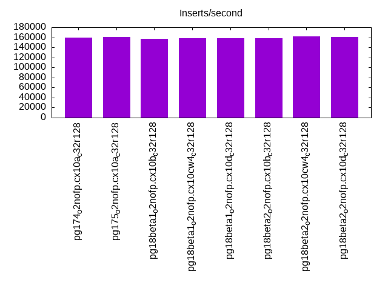
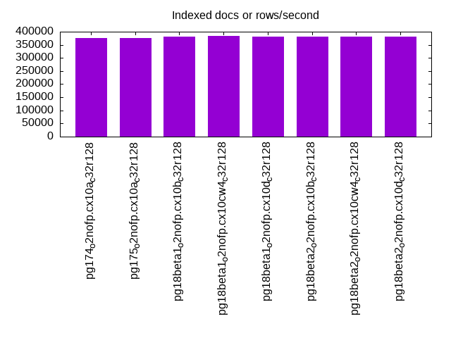
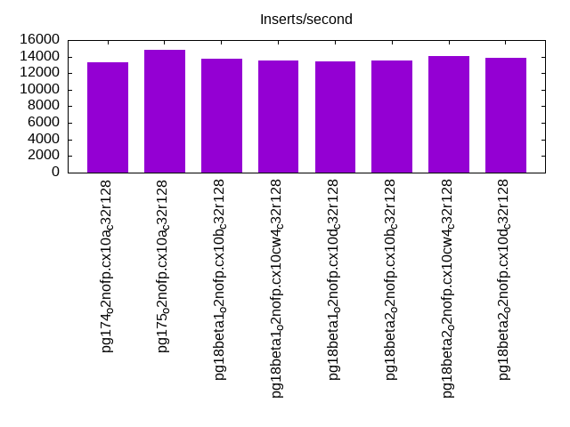
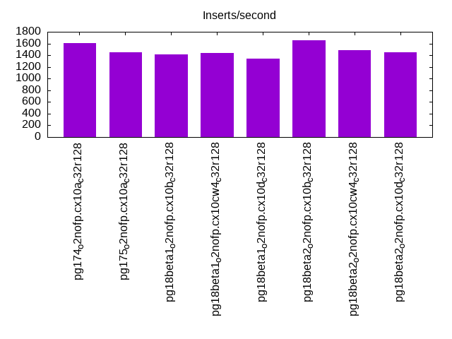
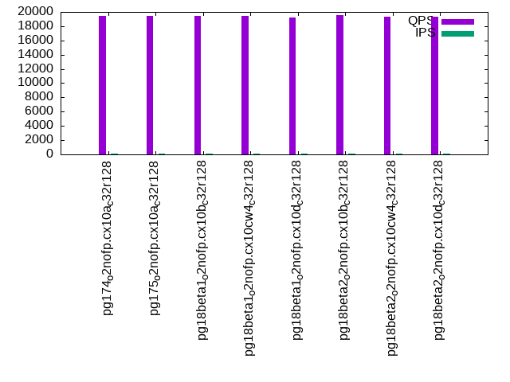
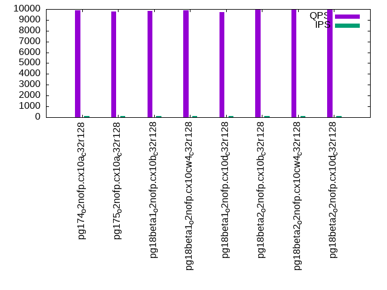
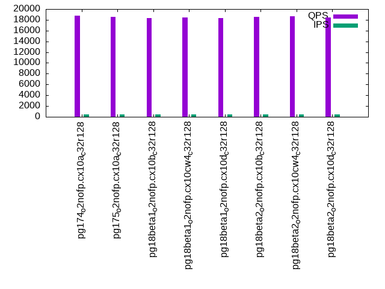
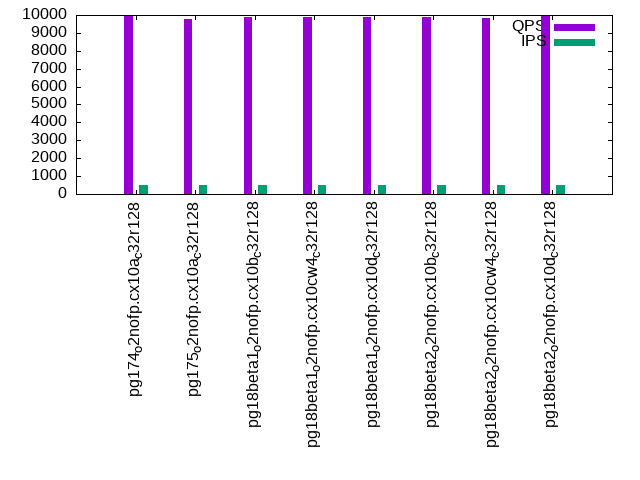
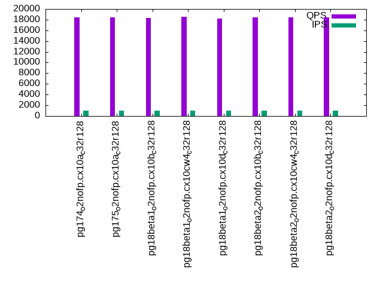
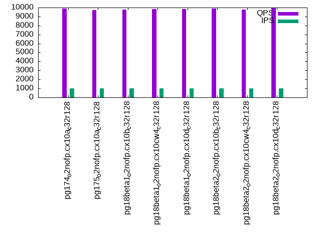

This is a report for the insert benchmark with 50M docs and 1 client(s). It is generated by scripts (bash, awk, sed) and Tufte might not be impressed. An overview of the insert benchmark is here and a short update is here. Below, by DBMS, I mean DBMS+version.config. An example is my8020.c10b40 where my means MySQL, 8020 is version 8.0.20 and c10b40 is the name for the configuration file.
The test server has 48 AMD cores, 128G RAM and RAID 10 with 2 NVMe devices. It is described here. The benchmark was run with 1 client and there were 1 or 3 connections per client (1 for queries or inserts without rate limits, 1+1 for rate limited inserts+deletes). It uses 1 table with a table per client. It loads 50M rows per table without secondary indexes, creates 3 secondary indexes per table, then inserts 16m+4m rows per table with a delete per insert to avoid growing the table. It then does 6 read+write tests for 1800s each that do queries as fast as possible with 100,100,500,500,1000,1000 inserts/s and the same for deletes/s per client concurrent with the queries. The database is cached by Postgres. Clients and the DBMS share one server. The per-database configs are in the per-database subdirectories here.
The tested DBMS are:
The numbers are inserts/s for l.i0, l.i1 and l.i2, indexed docs (or rows) /s for l.x and queries/s for qr100, qp100 thru qr1000, qp1000" The values are the average rate over the entire test for inserts (IPS) and queries (QPS). The range of values for IPS and QPS is split into 3 parts: bottom 25%, middle 50%, top 25%. Values in the bottom 25% have a red background, values in the top 25% have a green background and values in the middle have no color. A gray background is used for values that can be ignored because the DBMS did not sustain the target insert rate. Red backgrounds are not used when the minimum value is within 80% of the max value.
| dbms | l.i0 | l.x | l.i1 | l.i2 | qr100 | qp100 | qr500 | qp500 | qr1000 | qp1000 |
|---|---|---|---|---|---|---|---|---|---|---|
| pg174_o2nofp.cx10a_c32r128 | 159236 | 375941 | 13356 | 1610 | 19450 | 9892 | 18761 | 9949 | 18484 | 9881 |
| pg175_o2nofp.cx10a_c32r128 | 160772 | 375941 | 14828 | 1454 | 19481 | 9788 | 18581 | 9789 | 18385 | 9738 |
| pg18beta1_o2nofp.cx10b_c32r128 | 157233 | 381680 | 13769 | 1418 | 19418 | 9851 | 18373 | 9868 | 18292 | 9793 |
| pg18beta1_o2nofp.cx10cw4_c32r128 | 157729 | 384616 | 13548 | 1440 | 19473 | 9872 | 18484 | 9906 | 18532 | 9812 |
| pg18beta1_o2nofp.cx10d_c32r128 | 157729 | 381680 | 13434 | 1337 | 19207 | 9736 | 18338 | 9901 | 18183 | 9832 |
| pg18beta2_o2nofp.cx10b_c32r128 | 158730 | 381680 | 13536 | 1650 | 19545 | 9960 | 18581 | 9874 | 18457 | 9862 |
| pg18beta2_o2nofp.cx10cw4_c32r128 | 161290 | 381680 | 14060 | 1487 | 19306 | 9956 | 18649 | 9837 | 18400 | 9770 |
| pg18beta2_o2nofp.cx10d_c32r128 | 160256 | 381680 | 13853 | 1450 | 19352 | 9936 | 18490 | 9920 | 18416 | 9953 |
This table has relative throughput, throughput for the DBMS relative to the DBMS in the first line, using the absolute throughput from the previous table. Values less than 0.95 have a yellow background. Values greater than 1.05 have a blue background.
| dbms | l.i0 | l.x | l.i1 | l.i2 | qr100 | qp100 | qr500 | qp500 | qr1000 | qp1000 |
|---|---|---|---|---|---|---|---|---|---|---|
| pg174_o2nofp.cx10a_c32r128 | 1.00 | 1.00 | 1.00 | 1.00 | 1.00 | 1.00 | 1.00 | 1.00 | 1.00 | 1.00 |
| pg175_o2nofp.cx10a_c32r128 | 1.01 | 1.00 | 1.11 | 0.90 | 1.00 | 0.99 | 0.99 | 0.98 | 0.99 | 0.99 |
| pg18beta1_o2nofp.cx10b_c32r128 | 0.99 | 1.02 | 1.03 | 0.88 | 1.00 | 1.00 | 0.98 | 0.99 | 0.99 | 0.99 |
| pg18beta1_o2nofp.cx10cw4_c32r128 | 0.99 | 1.02 | 1.01 | 0.89 | 1.00 | 1.00 | 0.99 | 1.00 | 1.00 | 0.99 |
| pg18beta1_o2nofp.cx10d_c32r128 | 0.99 | 1.02 | 1.01 | 0.83 | 0.99 | 0.98 | 0.98 | 1.00 | 0.98 | 1.00 |
| pg18beta2_o2nofp.cx10b_c32r128 | 1.00 | 1.02 | 1.01 | 1.02 | 1.00 | 1.01 | 0.99 | 0.99 | 1.00 | 1.00 |
| pg18beta2_o2nofp.cx10cw4_c32r128 | 1.01 | 1.02 | 1.05 | 0.92 | 0.99 | 1.01 | 0.99 | 0.99 | 1.00 | 0.99 |
| pg18beta2_o2nofp.cx10d_c32r128 | 1.01 | 1.02 | 1.04 | 0.90 | 0.99 | 1.00 | 0.99 | 1.00 | 1.00 | 1.01 |
This lists the average rate of inserts/s for the tests that do inserts concurrent with queries. For such tests the query rate is listed in the table above. The read+write tests are setup so that the insert rate should match the target rate every second. Cells that are not at least 95% of the target have a red background to indicate a failure to satisfy the target.
| dbms | qr100.L1 | qp100.L2 | qr500.L3 | qp500.L4 | qr1000.L5 | qp1000.L6 |
|---|---|---|---|---|---|---|
| pg174_o2nofp.cx10a_c32r128 | 100 | 100 | 499 | 499 | 999 | 999 |
| pg175_o2nofp.cx10a_c32r128 | 100 | 100 | 499 | 499 | 999 | 999 |
| pg18beta1_o2nofp.cx10b_c32r128 | 100 | 100 | 499 | 499 | 999 | 999 |
| pg18beta1_o2nofp.cx10cw4_c32r128 | 100 | 100 | 499 | 499 | 999 | 999 |
| pg18beta1_o2nofp.cx10d_c32r128 | 100 | 100 | 499 | 499 | 998 | 999 |
| pg18beta2_o2nofp.cx10b_c32r128 | 100 | 100 | 499 | 499 | 999 | 999 |
| pg18beta2_o2nofp.cx10cw4_c32r128 | 100 | 100 | 499 | 499 | 999 | 999 |
| pg18beta2_o2nofp.cx10d_c32r128 | 100 | 100 | 499 | 499 | 999 | 999 |
| target | 100 | 100 | 500 | 500 | 1000 | 1000 |
l.i0: load without secondary indexes. Graphs for performance per 1-second interval are here.
Average throughput:
Insert response time histogram: each cell has the percentage of responses that take <= the time in the header and max is the max response time in seconds. For the max column values in the top 25% of the range have a red background and in the bottom 25% of the range have a green background. The red background is not used when the min value is within 80% of the max value.
| dbms | 256us | 1ms | 4ms | 16ms | 64ms | 256ms | 1s | 4s | 16s | gt | max |
|---|---|---|---|---|---|---|---|---|---|---|---|
| pg174_o2nofp.cx10a_c32r128 | 99.999 | nonzero | nonzero | nonzero | 0.017 | ||||||
| pg175_o2nofp.cx10a_c32r128 | 99.999 | 0.001 | nonzero | 0.025 | |||||||
| pg18beta1_o2nofp.cx10b_c32r128 | 99.998 | 0.002 | 0.002 | ||||||||
| pg18beta1_o2nofp.cx10cw4_c32r128 | 99.998 | 0.001 | 0.001 | nonzero | 0.019 | ||||||
| pg18beta1_o2nofp.cx10d_c32r128 | 99.999 | 0.001 | nonzero | 0.011 | |||||||
| pg18beta2_o2nofp.cx10b_c32r128 | 99.998 | 0.001 | 0.001 | 0.010 | |||||||
| pg18beta2_o2nofp.cx10cw4_c32r128 | 99.999 | 0.001 | nonzero | 0.010 | |||||||
| pg18beta2_o2nofp.cx10d_c32r128 | 99.999 | 0.001 | nonzero | 0.009 |
Performance metrics for the DBMS listed above. Some are normalized by throughput, others are not. Legend for results is here.
ips qps rps rmbps wps wmbps rpq rkbpq wpi wkbpi csps cpups cspq cpupq dbgb1 dbgb2 rss maxop p50 p99 tag 159236 0 1 0.0 602.1 67.6 0.000 0.000 0.004 0.435 17386 3.6 0.109 11 4.8 13.0 0.5 0.017 159716 159016 pg174_o2nofp.cx10a_c32r128 160772 0 0 0.0 608.4 68.2 0.000 0.000 0.004 0.434 17468 3.8 0.109 11 4.8 13.0 4.8 0.025 160815 157618 pg175_o2nofp.cx10a_c32r128 157233 0 0 0.0 597.3 66.8 0.000 0.000 0.004 0.435 16899 3.5 0.107 11 4.8 13.0 0.5 0.002 156817 155823 pg18beta1_o2nofp.cx10b_c32r128 157729 0 0 0.0 610.3 67.2 0.000 0.000 0.004 0.436 16904 3.4 0.107 10 4.8 13.0 4.7 0.019 158415 154022 pg18beta1_o2nofp.cx10cw4_c32r128 157729 0 0 0.0 600.3 66.9 0.000 0.000 0.004 0.434 16915 3.5 0.107 11 4.8 13.0 2.9 0.011 158219 155625 pg18beta1_o2nofp.cx10d_c32r128 158730 0 0 0.0 600.6 67.2 0.000 0.000 0.004 0.433 16968 3.3 0.107 10 4.8 13.0 4.7 0.010 158721 156516 pg18beta2_o2nofp.cx10b_c32r128 161290 0 0 0.0 611.8 68.2 0.000 0.000 0.004 0.433 17551 4.1 0.109 12 4.8 13.0 0.5 0.010 161913 159113 pg18beta2_o2nofp.cx10cw4_c32r128 160256 0 0 0.0 607.1 68.0 0.000 0.000 0.004 0.434 17429 3.8 0.109 11 4.8 13.0 0.5 0.009 161311 158318 pg18beta2_o2nofp.cx10d_c32r128
l.x: create secondary indexes.
Average throughput:
Performance metrics for the DBMS listed above. Some are normalized by throughput, others are not. Legend for results is here.
ips qps rps rmbps wps wmbps rpq rkbpq wpi wkbpi csps cpups cspq cpupq dbgb1 dbgb2 rss maxop p50 p99 tag 375941 0 1 0.0 943.1 113.4 0.000 0.000 0.003 0.309 2088 3.1 0.006 4 9.6 22.1 5.1 0.002 NA NA pg174_o2nofp.cx10a_c32r128 375941 0 0 0.0 944.7 113.3 0.000 0.000 0.003 0.309 2162 3.0 0.006 4 9.6 22.2 5.1 0.002 NA NA pg175_o2nofp.cx10a_c32r128 381680 0 0 0.0 964.8 115.9 0.000 0.000 0.003 0.311 2201 3.0 0.006 4 9.6 22.2 5.1 0.002 NA NA pg18beta1_o2nofp.cx10b_c32r128 384616 0 0 0.0 996.9 118.4 0.000 0.000 0.003 0.315 2259 2.9 0.006 4 9.6 22.2 5.1 0.002 NA NA pg18beta1_o2nofp.cx10cw4_c32r128 381680 0 0 0.0 962.1 115.3 0.000 0.000 0.003 0.309 2383 2.9 0.006 4 9.6 22.2 5.1 0.002 NA NA pg18beta1_o2nofp.cx10d_c32r128 381680 0 0 0.0 976.2 117.0 0.000 0.000 0.003 0.314 2444 2.9 0.006 4 9.6 22.2 5.1 0.002 NA NA pg18beta2_o2nofp.cx10b_c32r128 381680 0 0 0.0 976.6 116.9 0.000 0.000 0.003 0.314 2339 2.9 0.006 4 9.6 22.2 5.1 0.002 NA NA pg18beta2_o2nofp.cx10cw4_c32r128 381680 0 0 0.0 944.1 113.2 0.000 0.000 0.002 0.304 2399 2.8 0.006 4 9.6 22.2 5.1 0.002 NA NA pg18beta2_o2nofp.cx10d_c32r128
l.i1: continue load after secondary indexes created with 50 inserts per transaction. Graphs for performance per 1-second interval are here.
Average throughput:
Insert response time histogram: each cell has the percentage of responses that take <= the time in the header and max is the max response time in seconds. For the max column values in the top 25% of the range have a red background and in the bottom 25% of the range have a green background. The red background is not used when the min value is within 80% of the max value.
| dbms | 256us | 1ms | 4ms | 16ms | 64ms | 256ms | 1s | 4s | 16s | gt | max |
|---|---|---|---|---|---|---|---|---|---|---|---|
| pg174_o2nofp.cx10a_c32r128 | 44.432 | 55.567 | 0.001 | 0.007 | |||||||
| pg175_o2nofp.cx10a_c32r128 | 34.979 | 65.019 | 0.001 | 0.007 | |||||||
| pg18beta1_o2nofp.cx10b_c32r128 | 32.992 | 67.006 | 0.002 | 0.001 | 0.021 | ||||||
| pg18beta1_o2nofp.cx10cw4_c32r128 | 33.580 | 66.419 | 0.001 | 0.007 | |||||||
| pg18beta1_o2nofp.cx10d_c32r128 | 39.845 | 60.154 | 0.001 | 0.007 | |||||||
| pg18beta2_o2nofp.cx10b_c32r128 | 45.182 | 54.817 | 0.002 | 0.007 | |||||||
| pg18beta2_o2nofp.cx10cw4_c32r128 | 41.440 | 58.559 | 0.001 | 0.007 | |||||||
| pg18beta2_o2nofp.cx10d_c32r128 | 43.428 | 56.570 | 0.002 | 0.001 | 0.018 |
Delete response time histogram: each cell has the percentage of responses that take <= the time in the header and max is the max response time in seconds. For the max column values in the top 25% of the range have a red background and in the bottom 25% of the range have a green background. The red background is not used when the min value is within 80% of the max value.
| dbms | 256us | 1ms | 4ms | 16ms | 64ms | 256ms | 1s | 4s | 16s | gt | max |
|---|---|---|---|---|---|---|---|---|---|---|---|
| pg174_o2nofp.cx10a_c32r128 | 12.043 | 51.314 | 36.643 | 0.011 | |||||||
| pg175_o2nofp.cx10a_c32r128 | 12.078 | 55.093 | 32.829 | 0.011 | |||||||
| pg18beta1_o2nofp.cx10b_c32r128 | 11.680 | 38.984 | 49.335 | nonzero | 0.021 | ||||||
| pg18beta1_o2nofp.cx10cw4_c32r128 | 11.597 | 37.564 | 50.838 | 0.010 | |||||||
| pg18beta1_o2nofp.cx10d_c32r128 | 7.655 | 59.567 | 32.778 | nonzero | 0.017 | ||||||
| pg18beta2_o2nofp.cx10b_c32r128 | 12.024 | 48.692 | 39.284 | 0.010 | |||||||
| pg18beta2_o2nofp.cx10cw4_c32r128 | 12.031 | 44.914 | 43.056 | 0.010 | |||||||
| pg18beta2_o2nofp.cx10d_c32r128 | 12.012 | 49.443 | 38.545 | 0.012 |
Performance metrics for the DBMS listed above. Some are normalized by throughput, others are not. Legend for results is here.
ips qps rps rmbps wps wmbps rpq rkbpq wpi wkbpi csps cpups cspq cpupq dbgb1 dbgb2 rss maxop p50 p99 tag 13356 0 0 0.0 146.0 16.1 0.000 0.000 0.011 1.231 6301 2.9 0.472 104 10.8 31.2 8.4 0.007 8540 4895 pg174_o2nofp.cx10a_c32r128 14828 0 0 0.0 166.5 18.0 0.000 0.000 0.011 1.240 7018 3.1 0.473 100 10.9 31.2 9.1 0.007 12435 7441 pg175_o2nofp.cx10a_c32r128 13769 0 0 0.0 154.7 16.9 0.000 0.000 0.011 1.258 6485 3.1 0.471 108 10.9 31.3 2.6 0.021 10039 7292 pg18beta1_o2nofp.cx10b_c32r128 13548 0 0 0.0 159.8 16.7 0.000 0.000 0.012 1.260 6536 3.1 0.482 110 10.9 31.3 9.1 0.007 9789 7192 pg18beta1_o2nofp.cx10cw4_c32r128 13434 0 0 0.0 152.4 16.5 0.000 0.000 0.011 1.259 6504 2.9 0.484 104 10.9 31.3 9.0 0.007 10938 3596 pg18beta1_o2nofp.cx10d_c32r128 13536 0 0 0.0 151.5 16.5 0.000 0.000 0.011 1.249 6378 2.9 0.471 103 10.9 31.2 8.8 0.007 8690 5244 pg18beta2_o2nofp.cx10b_c32r128 14060 0 0 0.0 157.7 17.2 0.000 0.000 0.011 1.251 6723 3.1 0.478 106 10.8 31.2 2.6 0.007 9489 6243 pg18beta2_o2nofp.cx10cw4_c32r128 13853 0 0 0.0 153.3 16.9 0.000 0.000 0.011 1.250 6602 2.9 0.477 100 10.8 31.2 2.5 0.018 9090 5643 pg18beta2_o2nofp.cx10d_c32r128
l.i2: continue load after secondary indexes created with 5 inserts per transaction. Graphs for performance per 1-second interval are here.
Average throughput:
Insert response time histogram: each cell has the percentage of responses that take <= the time in the header and max is the max response time in seconds. For the max column values in the top 25% of the range have a red background and in the bottom 25% of the range have a green background. The red background is not used when the min value is within 80% of the max value.
| dbms | 256us | 1ms | 4ms | 16ms | 64ms | 256ms | 1s | 4s | 16s | gt | max |
|---|---|---|---|---|---|---|---|---|---|---|---|
| pg174_o2nofp.cx10a_c32r128 | 50.472 | 49.527 | nonzero | nonzero | 0.011 | ||||||
| pg175_o2nofp.cx10a_c32r128 | 26.530 | 73.469 | 0.001 | 0.004 | |||||||
| pg18beta1_o2nofp.cx10b_c32r128 | 16.396 | 83.603 | nonzero | 0.002 | |||||||
| pg18beta1_o2nofp.cx10cw4_c32r128 | 21.739 | 78.261 | nonzero | 0.003 | |||||||
| pg18beta1_o2nofp.cx10d_c32r128 | 33.381 | 66.619 | nonzero | 0.002 | |||||||
| pg18beta2_o2nofp.cx10b_c32r128 | 52.049 | 47.941 | 0.006 | 0.004 | 0.014 | ||||||
| pg18beta2_o2nofp.cx10cw4_c32r128 | 40.395 | 59.604 | 0.001 | nonzero | 0.005 | ||||||
| pg18beta2_o2nofp.cx10d_c32r128 | 38.264 | 61.736 | nonzero | 0.002 |
Delete response time histogram: each cell has the percentage of responses that take <= the time in the header and max is the max response time in seconds. For the max column values in the top 25% of the range have a red background and in the bottom 25% of the range have a green background. The red background is not used when the min value is within 80% of the max value.
| dbms | 256us | 1ms | 4ms | 16ms | 64ms | 256ms | 1s | 4s | 16s | gt | max |
|---|---|---|---|---|---|---|---|---|---|---|---|
| pg174_o2nofp.cx10a_c32r128 | 1.477 | 19.049 | 38.838 | 40.636 | nonzero | 0.031 | |||||
| pg175_o2nofp.cx10a_c32r128 | 0.517 | 9.556 | 55.784 | 34.143 | nonzero | 0.021 | |||||
| pg18beta1_o2nofp.cx10b_c32r128 | 0.330 | 9.679 | 51.532 | 38.459 | 0.015 | ||||||
| pg18beta1_o2nofp.cx10cw4_c32r128 | 0.355 | 9.599 | 50.131 | 39.915 | 0.014 | ||||||
| pg18beta1_o2nofp.cx10d_c32r128 | 0.318 | 9.617 | 65.304 | 24.761 | 0.015 | ||||||
| pg18beta2_o2nofp.cx10b_c32r128 | 1.127 | 19.425 | 40.907 | 38.540 | 0.001 | 0.033 | |||||
| pg18beta2_o2nofp.cx10cw4_c32r128 | 1.024 | 19.507 | 30.699 | 48.770 | nonzero | 0.032 | |||||
| pg18beta2_o2nofp.cx10d_c32r128 | 0.944 | 19.773 | 29.331 | 49.952 | nonzero | 0.030 |
Performance metrics for the DBMS listed above. Some are normalized by throughput, others are not. Legend for results is here.
ips qps rps rmbps wps wmbps rpq rkbpq wpi wkbpi csps cpups cspq cpupq dbgb1 dbgb2 rss maxop p50 p99 tag 1610 0 0 0.0 113.1 10.0 0.000 0.000 0.070 6.360 7106 2.0 4.415 596 11.1 36.0 0.5 0.011 954 694 pg174_o2nofp.cx10a_c32r128 1454 0 0 0.0 105.1 9.1 0.000 0.000 0.072 6.388 6521 2.0 4.483 660 11.1 36.3 0.6 0.004 1229 794 pg175_o2nofp.cx10a_c32r128 1418 0 0 0.0 100.0 8.9 0.000 0.000 0.070 6.421 6344 2.0 4.473 677 11.1 36.0 0.6 0.002 1219 799 pg18beta1_o2nofp.cx10b_c32r128 1440 0 0 0.0 101.3 9.0 0.000 0.000 0.070 6.401 6403 2.0 4.445 666 11.1 36.0 0.7 0.003 1194 804 pg18beta1_o2nofp.cx10cw4_c32r128 1337 0 0 0.0 96.4 8.5 0.000 0.000 0.072 6.525 5984 2.0 4.477 718 11.1 35.9 0.6 0.002 1184 449 pg18beta1_o2nofp.cx10d_c32r128 1650 0 0 0.0 113.8 10.1 0.000 0.000 0.069 6.264 7326 2.0 4.440 582 11.1 36.0 0.5 0.014 969 699 pg18beta2_o2nofp.cx10b_c32r128 1487 0 0 0.0 109.5 9.3 0.000 0.000 0.074 6.433 6618 2.0 4.451 646 11.1 36.0 9.3 0.005 1004 714 pg18beta2_o2nofp.cx10cw4_c32r128 1450 0 0 0.0 102.4 9.1 0.000 0.000 0.071 6.459 6454 2.0 4.450 662 11.1 36.0 7.7 0.002 994 739 pg18beta2_o2nofp.cx10d_c32r128
qr100.L1: range queries with 100 insert/s per client. Graphs for performance per 1-second interval are here.
Average throughput:
Query response time histogram: each cell has the percentage of responses that take <= the time in the header and max is the max response time in seconds. For max values in the top 25% of the range have a red background and in the bottom 25% of the range have a green background. The red background is not used when the min value is within 80% of the max value.
| dbms | 256us | 1ms | 4ms | 16ms | 64ms | 256ms | 1s | 4s | 16s | gt | max |
|---|---|---|---|---|---|---|---|---|---|---|---|
| pg174_o2nofp.cx10a_c32r128 | 100.000 | nonzero | nonzero | 0.001 | |||||||
| pg175_o2nofp.cx10a_c32r128 | 100.000 | nonzero | nonzero | 0.001 | |||||||
| pg18beta1_o2nofp.cx10b_c32r128 | 100.000 | nonzero | nonzero | 0.001 | |||||||
| pg18beta1_o2nofp.cx10cw4_c32r128 | 100.000 | nonzero | nonzero | 0.001 | |||||||
| pg18beta1_o2nofp.cx10d_c32r128 | 100.000 | nonzero | nonzero | nonzero | 0.004 | ||||||
| pg18beta2_o2nofp.cx10b_c32r128 | 100.000 | nonzero | nonzero | 0.001 | |||||||
| pg18beta2_o2nofp.cx10cw4_c32r128 | 100.000 | nonzero | nonzero | nonzero | 0.004 | ||||||
| pg18beta2_o2nofp.cx10d_c32r128 | 100.000 | nonzero | nonzero | 0.001 |
Insert response time histogram: each cell has the percentage of responses that take <= the time in the header and max is the max response time in seconds. For max values in the top 25% of the range have a red background and in the bottom 25% of the range have a green background. The red background is not used when the min value is within 80% of the max value.
| dbms | 256us | 1ms | 4ms | 16ms | 64ms | 256ms | 1s | 4s | 16s | gt | max |
|---|---|---|---|---|---|---|---|---|---|---|---|
| pg174_o2nofp.cx10a_c32r128 | 99.889 | 0.111 | 0.007 | ||||||||
| pg175_o2nofp.cx10a_c32r128 | 99.889 | 0.111 | 0.008 | ||||||||
| pg18beta1_o2nofp.cx10b_c32r128 | 99.889 | 0.111 | 0.008 | ||||||||
| pg18beta1_o2nofp.cx10cw4_c32r128 | 99.889 | 0.111 | 0.008 | ||||||||
| pg18beta1_o2nofp.cx10d_c32r128 | 99.889 | 0.111 | 0.008 | ||||||||
| pg18beta2_o2nofp.cx10b_c32r128 | 99.889 | 0.111 | 0.008 | ||||||||
| pg18beta2_o2nofp.cx10cw4_c32r128 | 99.889 | 0.111 | 0.008 | ||||||||
| pg18beta2_o2nofp.cx10d_c32r128 | 99.889 | 0.111 | 0.008 |
Delete response time histogram: each cell has the percentage of responses that take <= the time in the header and max is the max response time in seconds. For max values in the top 25% of the range have a red background and in the bottom 25% of the range have a green background. The red background is not used when the min value is within 80% of the max value.
| dbms | 256us | 1ms | 4ms | 16ms | 64ms | 256ms | 1s | 4s | 16s | gt | max |
|---|---|---|---|---|---|---|---|---|---|---|---|
| pg174_o2nofp.cx10a_c32r128 | 55.306 | 44.694 | 0.002 | ||||||||
| pg175_o2nofp.cx10a_c32r128 | 54.944 | 45.056 | 0.002 | ||||||||
| pg18beta1_o2nofp.cx10b_c32r128 | 55.333 | 44.667 | 0.002 | ||||||||
| pg18beta1_o2nofp.cx10cw4_c32r128 | 52.750 | 47.250 | 0.002 | ||||||||
| pg18beta1_o2nofp.cx10d_c32r128 | 52.556 | 47.444 | 0.002 | ||||||||
| pg18beta2_o2nofp.cx10b_c32r128 | 55.167 | 44.833 | 0.002 | ||||||||
| pg18beta2_o2nofp.cx10cw4_c32r128 | 54.250 | 45.750 | 0.002 | ||||||||
| pg18beta2_o2nofp.cx10d_c32r128 | 57.694 | 42.306 | 0.002 |
Performance metrics for the DBMS listed above. Some are normalized by throughput, others are not. Legend for results is here.
ips qps rps rmbps wps wmbps rpq rkbpq wpi wkbpi csps cpups cspq cpupq dbgb1 dbgb2 rss maxop p50 p99 tag 100 19450 0 0.0 14.4 1.0 0.000 0.000 0.144 10.587 74368 2.0 3.824 49 11.1 36.0 0.2 0.001 19498 19130 pg174_o2nofp.cx10a_c32r128 100 19481 0 0.0 21.3 1.1 0.000 0.000 0.214 10.900 74556 2.0 3.827 49 11.2 36.3 0.2 0.001 19529 19242 pg175_o2nofp.cx10a_c32r128 100 19418 0 0.0 15.6 1.0 0.000 0.000 0.156 10.687 74291 2.0 3.826 49 11.1 36.0 0.2 0.001 19497 19177 pg18beta1_o2nofp.cx10b_c32r128 100 19473 0 0.0 17.2 1.0 0.000 0.000 0.172 10.763 74467 2.0 3.824 49 11.1 36.0 0.2 0.001 19497 19225 pg18beta1_o2nofp.cx10cw4_c32r128 100 19207 0 0.0 16.8 1.0 0.000 0.000 0.169 10.744 73451 2.0 3.824 50 11.1 35.9 0.2 0.004 19130 18986 pg18beta1_o2nofp.cx10d_c32r128 100 19545 0 0.0 14.5 1.0 0.000 0.000 0.146 10.614 74731 2.0 3.823 49 11.1 36.0 0.2 0.001 19481 19305 pg18beta2_o2nofp.cx10b_c32r128 100 19306 0 0.0 18.6 1.0 0.000 0.000 0.186 10.772 73839 2.0 3.825 50 11.1 36.0 0.2 0.004 19306 19034 pg18beta2_o2nofp.cx10cw4_c32r128 100 19352 0 0.0 15.3 1.0 0.000 0.000 0.154 10.612 73999 2.0 3.824 50 11.1 36.0 0.2 0.001 19401 19066 pg18beta2_o2nofp.cx10d_c32r128
qp100.L2: point queries with 100 insert/s per client. Graphs for performance per 1-second interval are here.
Average throughput:
Query response time histogram: each cell has the percentage of responses that take <= the time in the header and max is the max response time in seconds. For max values in the top 25% of the range have a red background and in the bottom 25% of the range have a green background. The red background is not used when the min value is within 80% of the max value.
| dbms | 256us | 1ms | 4ms | 16ms | 64ms | 256ms | 1s | 4s | 16s | gt | max |
|---|---|---|---|---|---|---|---|---|---|---|---|
| pg174_o2nofp.cx10a_c32r128 | 100.000 | nonzero | 0.001 | ||||||||
| pg175_o2nofp.cx10a_c32r128 | 100.000 | nonzero | 0.001 | ||||||||
| pg18beta1_o2nofp.cx10b_c32r128 | 100.000 | nonzero | nonzero | 0.004 | |||||||
| pg18beta1_o2nofp.cx10cw4_c32r128 | 100.000 | nonzero | nonzero | 0.001 | |||||||
| pg18beta1_o2nofp.cx10d_c32r128 | 100.000 | nonzero | 0.001 | ||||||||
| pg18beta2_o2nofp.cx10b_c32r128 | 100.000 | nonzero | 0.001 | ||||||||
| pg18beta2_o2nofp.cx10cw4_c32r128 | 100.000 | nonzero | 0.001 | ||||||||
| pg18beta2_o2nofp.cx10d_c32r128 | 100.000 | nonzero | 0.001 |
Insert response time histogram: each cell has the percentage of responses that take <= the time in the header and max is the max response time in seconds. For max values in the top 25% of the range have a red background and in the bottom 25% of the range have a green background. The red background is not used when the min value is within 80% of the max value.
| dbms | 256us | 1ms | 4ms | 16ms | 64ms | 256ms | 1s | 4s | 16s | gt | max |
|---|---|---|---|---|---|---|---|---|---|---|---|
| pg174_o2nofp.cx10a_c32r128 | 99.889 | 0.111 | 0.007 | ||||||||
| pg175_o2nofp.cx10a_c32r128 | 99.889 | 0.111 | 0.007 | ||||||||
| pg18beta1_o2nofp.cx10b_c32r128 | 99.889 | 0.111 | 0.007 | ||||||||
| pg18beta1_o2nofp.cx10cw4_c32r128 | 99.917 | 0.083 | 0.007 | ||||||||
| pg18beta1_o2nofp.cx10d_c32r128 | 99.889 | 0.111 | 0.008 | ||||||||
| pg18beta2_o2nofp.cx10b_c32r128 | 99.889 | 0.111 | 0.008 | ||||||||
| pg18beta2_o2nofp.cx10cw4_c32r128 | 99.889 | 0.111 | 0.008 | ||||||||
| pg18beta2_o2nofp.cx10d_c32r128 | 99.944 | 0.056 | 0.008 |
Delete response time histogram: each cell has the percentage of responses that take <= the time in the header and max is the max response time in seconds. For max values in the top 25% of the range have a red background and in the bottom 25% of the range have a green background. The red background is not used when the min value is within 80% of the max value.
| dbms | 256us | 1ms | 4ms | 16ms | 64ms | 256ms | 1s | 4s | 16s | gt | max |
|---|---|---|---|---|---|---|---|---|---|---|---|
| pg174_o2nofp.cx10a_c32r128 | 99.972 | 0.028 | 0.007 | ||||||||
| pg175_o2nofp.cx10a_c32r128 | 99.972 | 0.028 | 0.007 | ||||||||
| pg18beta1_o2nofp.cx10b_c32r128 | 99.972 | 0.028 | 0.007 | ||||||||
| pg18beta1_o2nofp.cx10cw4_c32r128 | 99.972 | 0.028 | 0.007 | ||||||||
| pg18beta1_o2nofp.cx10d_c32r128 | 99.972 | 0.028 | 0.007 | ||||||||
| pg18beta2_o2nofp.cx10b_c32r128 | 99.972 | 0.028 | 0.007 | ||||||||
| pg18beta2_o2nofp.cx10cw4_c32r128 | 99.972 | 0.028 | 0.007 | ||||||||
| pg18beta2_o2nofp.cx10d_c32r128 | 99.972 | 0.028 | 0.007 |
Performance metrics for the DBMS listed above. Some are normalized by throughput, others are not. Legend for results is here.
ips qps rps rmbps wps wmbps rpq rkbpq wpi wkbpi csps cpups cspq cpupq dbgb1 dbgb2 rss maxop p50 p99 tag 100 9892 0 0.0 81.3 2.0 0.000 0.000 0.814 20.426 38328 2.3 3.875 112 11.1 36.0 0.2 0.001 9893 9829 pg174_o2nofp.cx10a_c32r128 100 9788 0 0.0 86.0 2.0 0.000 0.000 0.862 20.702 37942 2.4 3.876 118 11.2 36.3 0.2 0.001 9780 9717 pg175_o2nofp.cx10a_c32r128 100 9851 0 0.0 82.6 2.0 0.000 0.000 0.828 20.563 38173 2.3 3.875 112 11.2 36.0 0.2 0.004 9860 9781 pg18beta1_o2nofp.cx10b_c32r128 100 9872 0 0.0 83.1 2.0 0.000 0.000 0.833 20.560 38255 2.4 3.875 117 11.1 36.0 0.2 0.001 9876 9781 pg18beta1_o2nofp.cx10cw4_c32r128 100 9736 0 0.0 80.7 2.0 0.000 0.000 0.809 20.493 37723 2.3 3.874 113 11.2 35.9 0.2 0.001 9733 9685 pg18beta1_o2nofp.cx10d_c32r128 100 9960 0 0.0 80.9 2.0 0.000 0.000 0.810 20.480 38585 2.4 3.874 116 11.1 36.0 0.2 0.001 9972 9876 pg18beta2_o2nofp.cx10b_c32r128 100 9956 0 0.0 82.8 2.0 0.000 0.000 0.829 20.503 38598 2.4 3.877 116 11.1 36.0 0.2 0.001 9972 9893 pg18beta2_o2nofp.cx10cw4_c32r128 100 9936 0 0.0 81.7 2.0 0.000 0.000 0.818 20.446 38497 2.3 3.875 111 11.1 36.0 0.2 0.001 9940 9860 pg18beta2_o2nofp.cx10d_c32r128
qr500.L3: range queries with 500 insert/s per client. Graphs for performance per 1-second interval are here.
Average throughput:
Query response time histogram: each cell has the percentage of responses that take <= the time in the header and max is the max response time in seconds. For max values in the top 25% of the range have a red background and in the bottom 25% of the range have a green background. The red background is not used when the min value is within 80% of the max value.
| dbms | 256us | 1ms | 4ms | 16ms | 64ms | 256ms | 1s | 4s | 16s | gt | max |
|---|---|---|---|---|---|---|---|---|---|---|---|
| pg174_o2nofp.cx10a_c32r128 | 100.000 | nonzero | nonzero | 0.003 | |||||||
| pg175_o2nofp.cx10a_c32r128 | 100.000 | nonzero | nonzero | 0.002 | |||||||
| pg18beta1_o2nofp.cx10b_c32r128 | 100.000 | nonzero | nonzero | nonzero | 0.004 | ||||||
| pg18beta1_o2nofp.cx10cw4_c32r128 | 100.000 | nonzero | nonzero | nonzero | 0.004 | ||||||
| pg18beta1_o2nofp.cx10d_c32r128 | 100.000 | nonzero | nonzero | 0.003 | |||||||
| pg18beta2_o2nofp.cx10b_c32r128 | 100.000 | nonzero | nonzero | 0.003 | |||||||
| pg18beta2_o2nofp.cx10cw4_c32r128 | 100.000 | nonzero | nonzero | 0.003 | |||||||
| pg18beta2_o2nofp.cx10d_c32r128 | 100.000 | nonzero | nonzero | nonzero | 0.004 |
Insert response time histogram: each cell has the percentage of responses that take <= the time in the header and max is the max response time in seconds. For max values in the top 25% of the range have a red background and in the bottom 25% of the range have a green background. The red background is not used when the min value is within 80% of the max value.
| dbms | 256us | 1ms | 4ms | 16ms | 64ms | 256ms | 1s | 4s | 16s | gt | max |
|---|---|---|---|---|---|---|---|---|---|---|---|
| pg174_o2nofp.cx10a_c32r128 | 14.556 | 85.428 | 0.017 | 0.007 | |||||||
| pg175_o2nofp.cx10a_c32r128 | 11.444 | 88.539 | 0.017 | 0.008 | |||||||
| pg18beta1_o2nofp.cx10b_c32r128 | 15.100 | 84.883 | 0.017 | 0.008 | |||||||
| pg18beta1_o2nofp.cx10cw4_c32r128 | 14.067 | 85.917 | 0.017 | 0.008 | |||||||
| pg18beta1_o2nofp.cx10d_c32r128 | 13.344 | 86.639 | 0.017 | 0.008 | |||||||
| pg18beta2_o2nofp.cx10b_c32r128 | 13.378 | 86.606 | 0.017 | 0.007 | |||||||
| pg18beta2_o2nofp.cx10cw4_c32r128 | 16.906 | 83.078 | 0.017 | 0.008 | |||||||
| pg18beta2_o2nofp.cx10d_c32r128 | 17.606 | 82.378 | 0.017 | 0.008 |
Delete response time histogram: each cell has the percentage of responses that take <= the time in the header and max is the max response time in seconds. For max values in the top 25% of the range have a red background and in the bottom 25% of the range have a green background. The red background is not used when the min value is within 80% of the max value.
| dbms | 256us | 1ms | 4ms | 16ms | 64ms | 256ms | 1s | 4s | 16s | gt | max |
|---|---|---|---|---|---|---|---|---|---|---|---|
| pg174_o2nofp.cx10a_c32r128 | 94.861 | 5.139 | 0.010 | ||||||||
| pg175_o2nofp.cx10a_c32r128 | 95.011 | 4.989 | 0.010 | ||||||||
| pg18beta1_o2nofp.cx10b_c32r128 | 94.911 | 5.089 | 0.010 | ||||||||
| pg18beta1_o2nofp.cx10cw4_c32r128 | 94.817 | 5.183 | 0.011 | ||||||||
| pg18beta1_o2nofp.cx10d_c32r128 | 95.050 | 4.950 | 0.011 | ||||||||
| pg18beta2_o2nofp.cx10b_c32r128 | 95.533 | 4.467 | 0.010 | ||||||||
| pg18beta2_o2nofp.cx10cw4_c32r128 | 95.478 | 4.522 | 0.011 | ||||||||
| pg18beta2_o2nofp.cx10d_c32r128 | 95.744 | 4.256 | 0.011 |
Performance metrics for the DBMS listed above. Some are normalized by throughput, others are not. Legend for results is here.
ips qps rps rmbps wps wmbps rpq rkbpq wpi wkbpi csps cpups cspq cpupq dbgb1 dbgb2 rss maxop p50 p99 tag 499 18761 0 0.0 91.0 3.1 0.000 0.000 0.182 6.311 71926 2.0 3.834 51 11.2 36.1 0.4 0.003 18794 18283 pg174_o2nofp.cx10a_c32r128 499 18581 0 0.0 92.9 3.1 0.000 0.000 0.186 6.342 71203 2.1 3.832 54 11.3 36.4 0.5 0.002 18538 18123 pg175_o2nofp.cx10a_c32r128 499 18373 0 0.0 89.2 3.1 0.000 0.000 0.179 6.317 70398 2.1 3.832 55 11.2 36.1 0.4 0.004 18379 17819 pg18beta1_o2nofp.cx10b_c32r128 499 18484 0 0.0 92.5 3.1 0.000 0.000 0.185 6.346 70830 2.0 3.832 52 11.2 36.1 0.4 0.004 18490 17915 pg18beta1_o2nofp.cx10cw4_c32r128 499 18338 0 0.0 88.5 3.1 0.000 0.000 0.177 6.309 70264 2.1 3.832 55 11.2 36.0 0.4 0.003 18347 17851 pg18beta1_o2nofp.cx10d_c32r128 499 18581 0 0.0 90.0 3.1 0.000 0.000 0.180 6.309 71239 2.0 3.834 52 11.2 36.1 0.4 0.003 18587 18106 pg18beta2_o2nofp.cx10b_c32r128 499 18649 0 0.0 90.5 3.1 0.000 0.000 0.181 6.272 71453 2.0 3.832 51 11.2 36.0 0.4 0.003 18635 18171 pg18beta2_o2nofp.cx10cw4_c32r128 499 18490 0 0.0 88.8 3.1 0.000 0.000 0.178 6.259 70878 2.1 3.833 55 11.2 36.0 0.4 0.004 18442 18027 pg18beta2_o2nofp.cx10d_c32r128
qp500.L4: point queries with 500 insert/s per client. Graphs for performance per 1-second interval are here.
Average throughput:
Query response time histogram: each cell has the percentage of responses that take <= the time in the header and max is the max response time in seconds. For max values in the top 25% of the range have a red background and in the bottom 25% of the range have a green background. The red background is not used when the min value is within 80% of the max value.
| dbms | 256us | 1ms | 4ms | 16ms | 64ms | 256ms | 1s | 4s | 16s | gt | max |
|---|---|---|---|---|---|---|---|---|---|---|---|
| pg174_o2nofp.cx10a_c32r128 | 100.000 | nonzero | 0.001 | ||||||||
| pg175_o2nofp.cx10a_c32r128 | 100.000 | nonzero | 0.001 | ||||||||
| pg18beta1_o2nofp.cx10b_c32r128 | 100.000 | nonzero | 0.001 | ||||||||
| pg18beta1_o2nofp.cx10cw4_c32r128 | 100.000 | nonzero | 0.001 | ||||||||
| pg18beta1_o2nofp.cx10d_c32r128 | 100.000 | nonzero | nonzero | 0.001 | |||||||
| pg18beta2_o2nofp.cx10b_c32r128 | 100.000 | nonzero | nonzero | 0.003 | |||||||
| pg18beta2_o2nofp.cx10cw4_c32r128 | 99.999 | 0.001 | 0.001 | ||||||||
| pg18beta2_o2nofp.cx10d_c32r128 | 100.000 | nonzero | 0.001 |
Insert response time histogram: each cell has the percentage of responses that take <= the time in the header and max is the max response time in seconds. For max values in the top 25% of the range have a red background and in the bottom 25% of the range have a green background. The red background is not used when the min value is within 80% of the max value.
| dbms | 256us | 1ms | 4ms | 16ms | 64ms | 256ms | 1s | 4s | 16s | gt | max |
|---|---|---|---|---|---|---|---|---|---|---|---|
| pg174_o2nofp.cx10a_c32r128 | 6.922 | 93.061 | 0.017 | 0.008 | |||||||
| pg175_o2nofp.cx10a_c32r128 | 10.517 | 89.461 | 0.022 | 0.008 | |||||||
| pg18beta1_o2nofp.cx10b_c32r128 | 11.556 | 88.428 | 0.017 | 0.007 | |||||||
| pg18beta1_o2nofp.cx10cw4_c32r128 | 12.350 | 87.633 | 0.017 | 0.007 | |||||||
| pg18beta1_o2nofp.cx10d_c32r128 | 13.200 | 86.783 | 0.017 | 0.007 | |||||||
| pg18beta2_o2nofp.cx10b_c32r128 | 12.361 | 87.622 | 0.017 | 0.008 | |||||||
| pg18beta2_o2nofp.cx10cw4_c32r128 | 13.706 | 86.278 | 0.017 | 0.007 | |||||||
| pg18beta2_o2nofp.cx10d_c32r128 | 11.033 | 88.950 | 0.017 | 0.008 |
Delete response time histogram: each cell has the percentage of responses that take <= the time in the header and max is the max response time in seconds. For max values in the top 25% of the range have a red background and in the bottom 25% of the range have a green background. The red background is not used when the min value is within 80% of the max value.
| dbms | 256us | 1ms | 4ms | 16ms | 64ms | 256ms | 1s | 4s | 16s | gt | max |
|---|---|---|---|---|---|---|---|---|---|---|---|
| pg174_o2nofp.cx10a_c32r128 | 45.278 | 54.717 | 0.006 | 0.022 | |||||||
| pg175_o2nofp.cx10a_c32r128 | 42.789 | 57.206 | 0.006 | 0.022 | |||||||
| pg18beta1_o2nofp.cx10b_c32r128 | 40.372 | 59.622 | 0.006 | 0.022 | |||||||
| pg18beta1_o2nofp.cx10cw4_c32r128 | 44.200 | 55.794 | 0.006 | 0.023 | |||||||
| pg18beta1_o2nofp.cx10d_c32r128 | 39.428 | 60.567 | 0.006 | 0.024 | |||||||
| pg18beta2_o2nofp.cx10b_c32r128 | 42.656 | 57.339 | 0.006 | 0.022 | |||||||
| pg18beta2_o2nofp.cx10cw4_c32r128 | 42.856 | 57.139 | 0.006 | 0.024 | |||||||
| pg18beta2_o2nofp.cx10d_c32r128 | 45.361 | 54.633 | 0.006 | 0.023 |
Performance metrics for the DBMS listed above. Some are normalized by throughput, others are not. Legend for results is here.
ips qps rps rmbps wps wmbps rpq rkbpq wpi wkbpi csps cpups cspq cpupq dbgb1 dbgb2 rss maxop p50 p99 tag 499 9949 0 0.0 69.5 3.9 0.000 0.000 0.139 8.034 38675 2.5 3.887 121 11.3 36.2 0.5 0.001 9941 9877 pg174_o2nofp.cx10a_c32r128 499 9789 0 0.0 73.1 3.9 0.000 0.000 0.146 8.062 38066 2.5 3.888 123 11.4 36.5 0.6 0.001 9781 9717 pg175_o2nofp.cx10a_c32r128 499 9868 2 0.2 70.8 4.2 0.000 0.020 0.142 8.672 38363 2.4 3.888 117 11.4 36.2 0.6 0.001 9876 9796 pg18beta1_o2nofp.cx10b_c32r128 499 9906 0 0.0 72.3 3.9 0.000 0.000 0.145 8.069 38518 2.5 3.888 121 11.4 36.2 0.6 0.001 9909 9781 pg18beta1_o2nofp.cx10cw4_c32r128 499 9901 0 0.0 67.8 3.9 0.000 0.000 0.136 8.040 38504 2.5 3.889 121 11.4 36.1 0.6 0.001 9908 9845 pg18beta1_o2nofp.cx10d_c32r128 499 9874 0 0.0 69.4 3.9 0.000 0.000 0.139 8.052 38405 2.4 3.889 117 11.3 36.2 0.5 0.003 9876 9812 pg18beta2_o2nofp.cx10b_c32r128 499 9837 0 0.0 68.6 3.9 0.000 0.000 0.137 8.014 38239 2.4 3.887 117 11.3 36.2 0.5 0.001 9828 9765 pg18beta2_o2nofp.cx10cw4_c32r128 499 9920 0 0.0 68.5 3.9 0.000 0.000 0.137 8.020 38582 2.3 3.889 111 11.3 36.1 0.5 0.001 9924 9860 pg18beta2_o2nofp.cx10d_c32r128
qr1000.L5: range queries with 1000 insert/s per client. Graphs for performance per 1-second interval are here.
Average throughput:
Query response time histogram: each cell has the percentage of responses that take <= the time in the header and max is the max response time in seconds. For max values in the top 25% of the range have a red background and in the bottom 25% of the range have a green background. The red background is not used when the min value is within 80% of the max value.
| dbms | 256us | 1ms | 4ms | 16ms | 64ms | 256ms | 1s | 4s | 16s | gt | max |
|---|---|---|---|---|---|---|---|---|---|---|---|
| pg174_o2nofp.cx10a_c32r128 | 99.998 | 0.001 | nonzero | nonzero | 0.011 | ||||||
| pg175_o2nofp.cx10a_c32r128 | 99.998 | 0.001 | nonzero | nonzero | 0.011 | ||||||
| pg18beta1_o2nofp.cx10b_c32r128 | 99.998 | 0.001 | nonzero | nonzero | 0.011 | ||||||
| pg18beta1_o2nofp.cx10cw4_c32r128 | 99.998 | 0.001 | nonzero | nonzero | 0.012 | ||||||
| pg18beta1_o2nofp.cx10d_c32r128 | 99.998 | 0.001 | nonzero | nonzero | 0.012 | ||||||
| pg18beta2_o2nofp.cx10b_c32r128 | 99.998 | 0.001 | nonzero | nonzero | 0.011 | ||||||
| pg18beta2_o2nofp.cx10cw4_c32r128 | 99.998 | 0.001 | nonzero | nonzero | 0.012 | ||||||
| pg18beta2_o2nofp.cx10d_c32r128 | 99.998 | 0.001 | nonzero | nonzero | 0.012 |
Insert response time histogram: each cell has the percentage of responses that take <= the time in the header and max is the max response time in seconds. For max values in the top 25% of the range have a red background and in the bottom 25% of the range have a green background. The red background is not used when the min value is within 80% of the max value.
| dbms | 256us | 1ms | 4ms | 16ms | 64ms | 256ms | 1s | 4s | 16s | gt | max |
|---|---|---|---|---|---|---|---|---|---|---|---|
| pg174_o2nofp.cx10a_c32r128 | 45.697 | 54.283 | 0.017 | 0.003 | 0.020 | ||||||
| pg175_o2nofp.cx10a_c32r128 | 44.017 | 55.958 | 0.025 | 0.013 | |||||||
| pg18beta1_o2nofp.cx10b_c32r128 | 46.722 | 53.258 | 0.019 | 0.014 | |||||||
| pg18beta1_o2nofp.cx10cw4_c32r128 | 48.147 | 51.828 | 0.025 | 0.014 | |||||||
| pg18beta1_o2nofp.cx10d_c32r128 | 46.119 | 53.858 | 0.017 | 0.006 | 0.022 | ||||||
| pg18beta2_o2nofp.cx10b_c32r128 | 49.822 | 50.153 | 0.025 | 0.013 | |||||||
| pg18beta2_o2nofp.cx10cw4_c32r128 | 46.981 | 52.994 | 0.019 | 0.006 | 0.023 | ||||||
| pg18beta2_o2nofp.cx10d_c32r128 | 46.053 | 53.925 | 0.022 | 0.015 |
Delete response time histogram: each cell has the percentage of responses that take <= the time in the header and max is the max response time in seconds. For max values in the top 25% of the range have a red background and in the bottom 25% of the range have a green background. The red background is not used when the min value is within 80% of the max value.
| dbms | 256us | 1ms | 4ms | 16ms | 64ms | 256ms | 1s | 4s | 16s | gt | max |
|---|---|---|---|---|---|---|---|---|---|---|---|
| pg174_o2nofp.cx10a_c32r128 | 8.736 | 69.908 | 21.353 | 0.003 | 0.032 | ||||||
| pg175_o2nofp.cx10a_c32r128 | 8.389 | 70.733 | 20.875 | 0.003 | 0.031 | ||||||
| pg18beta1_o2nofp.cx10b_c32r128 | 8.333 | 81.550 | 10.114 | 0.003 | 0.032 | ||||||
| pg18beta1_o2nofp.cx10cw4_c32r128 | 8.644 | 81.717 | 9.636 | 0.003 | 0.033 | ||||||
| pg18beta1_o2nofp.cx10d_c32r128 | 8.169 | 82.311 | 9.517 | 0.003 | 0.034 | ||||||
| pg18beta2_o2nofp.cx10b_c32r128 | 8.492 | 81.883 | 9.622 | 0.003 | 0.032 | ||||||
| pg18beta2_o2nofp.cx10cw4_c32r128 | 10.644 | 81.728 | 7.625 | 0.003 | 0.033 | ||||||
| pg18beta2_o2nofp.cx10d_c32r128 | 9.856 | 83.219 | 6.922 | 0.003 | 0.033 |
Performance metrics for the DBMS listed above. Some are normalized by throughput, others are not. Legend for results is here.
ips qps rps rmbps wps wmbps rpq rkbpq wpi wkbpi csps cpups cspq cpupq dbgb1 dbgb2 rss maxop p50 p99 tag 999 18484 0 0.0 79.5 4.5 0.000 0.000 0.080 4.633 71013 2.6 3.842 68 11.4 36.2 0.5 0.011 18586 17196 pg174_o2nofp.cx10a_c32r128 999 18385 0 0.0 83.0 4.5 0.000 0.000 0.083 4.637 70649 2.6 3.843 68 11.4 36.6 0.5 0.011 18491 17116 pg175_o2nofp.cx10a_c32r128 999 18292 0 0.0 79.1 4.5 0.000 0.000 0.079 4.589 70287 2.7 3.842 71 11.4 36.3 0.4 0.011 18298 17004 pg18beta1_o2nofp.cx10b_c32r128 999 18532 0 0.0 84.3 4.5 0.000 0.000 0.084 4.629 71210 2.7 3.843 70 11.4 36.3 4.4 0.012 18539 17164 pg18beta1_o2nofp.cx10cw4_c32r128 998 18183 0 0.0 78.5 4.5 0.000 0.000 0.079 4.593 69907 2.7 3.845 71 11.4 36.1 9.5 0.012 18235 16844 pg18beta1_o2nofp.cx10d_c32r128 999 18457 0 0.0 81.2 4.5 0.000 0.000 0.081 4.631 70921 2.6 3.842 68 11.4 36.3 0.4 0.011 18475 17228 pg18beta2_o2nofp.cx10b_c32r128 999 18400 0 0.0 80.9 4.5 0.000 0.000 0.081 4.613 70705 2.6 3.843 68 11.3 36.2 0.4 0.012 18379 17196 pg18beta2_o2nofp.cx10cw4_c32r128 999 18416 0 0.0 81.2 4.5 0.000 0.000 0.081 4.638 70769 2.6 3.843 68 11.4 36.3 0.4 0.012 18380 17245 pg18beta2_o2nofp.cx10d_c32r128
qp1000.L6: point queries with 1000 insert/s per client. Graphs for performance per 1-second interval are here.
Average throughput:
Query response time histogram: each cell has the percentage of responses that take <= the time in the header and max is the max response time in seconds. For max values in the top 25% of the range have a red background and in the bottom 25% of the range have a green background. The red background is not used when the min value is within 80% of the max value.
| dbms | 256us | 1ms | 4ms | 16ms | 64ms | 256ms | 1s | 4s | 16s | gt | max |
|---|---|---|---|---|---|---|---|---|---|---|---|
| pg174_o2nofp.cx10a_c32r128 | 99.999 | 0.001 | 0.001 | ||||||||
| pg175_o2nofp.cx10a_c32r128 | 99.999 | 0.001 | nonzero | 0.004 | |||||||
| pg18beta1_o2nofp.cx10b_c32r128 | 99.999 | 0.001 | 0.001 | ||||||||
| pg18beta1_o2nofp.cx10cw4_c32r128 | 99.999 | 0.001 | 0.001 | ||||||||
| pg18beta1_o2nofp.cx10d_c32r128 | 100.000 | nonzero | 0.001 | ||||||||
| pg18beta2_o2nofp.cx10b_c32r128 | 99.999 | 0.001 | 0.001 | ||||||||
| pg18beta2_o2nofp.cx10cw4_c32r128 | 99.999 | 0.001 | nonzero | 0.002 | |||||||
| pg18beta2_o2nofp.cx10d_c32r128 | 100.000 | nonzero | nonzero | 0.001 |
Insert response time histogram: each cell has the percentage of responses that take <= the time in the header and max is the max response time in seconds. For max values in the top 25% of the range have a red background and in the bottom 25% of the range have a green background. The red background is not used when the min value is within 80% of the max value.
| dbms | 256us | 1ms | 4ms | 16ms | 64ms | 256ms | 1s | 4s | 16s | gt | max |
|---|---|---|---|---|---|---|---|---|---|---|---|
| pg174_o2nofp.cx10a_c32r128 | 30.217 | 69.772 | 0.011 | 0.015 | |||||||
| pg175_o2nofp.cx10a_c32r128 | 31.128 | 68.861 | 0.011 | 0.014 | |||||||
| pg18beta1_o2nofp.cx10b_c32r128 | 38.394 | 61.594 | 0.011 | 0.011 | |||||||
| pg18beta1_o2nofp.cx10cw4_c32r128 | 39.800 | 60.186 | 0.014 | 0.012 | |||||||
| pg18beta1_o2nofp.cx10d_c32r128 | 40.158 | 59.825 | 0.017 | 0.013 | |||||||
| pg18beta2_o2nofp.cx10b_c32r128 | 42.144 | 57.842 | 0.014 | 0.014 | |||||||
| pg18beta2_o2nofp.cx10cw4_c32r128 | 44.475 | 55.500 | 0.025 | 0.014 | |||||||
| pg18beta2_o2nofp.cx10d_c32r128 | 45.131 | 54.853 | 0.017 | 0.014 |
Delete response time histogram: each cell has the percentage of responses that take <= the time in the header and max is the max response time in seconds. For max values in the top 25% of the range have a red background and in the bottom 25% of the range have a green background. The red background is not used when the min value is within 80% of the max value.
| dbms | 256us | 1ms | 4ms | 16ms | 64ms | 256ms | 1s | 4s | 16s | gt | max |
|---|---|---|---|---|---|---|---|---|---|---|---|
| pg174_o2nofp.cx10a_c32r128 | 8.878 | 47.233 | 43.886 | 0.003 | 0.024 | ||||||
| pg175_o2nofp.cx10a_c32r128 | 8.792 | 46.175 | 45.031 | 0.003 | 0.024 | ||||||
| pg18beta1_o2nofp.cx10b_c32r128 | 14.825 | 53.017 | 32.156 | 0.003 | 0.027 | ||||||
| pg18beta1_o2nofp.cx10cw4_c32r128 | 14.278 | 53.986 | 31.733 | 0.003 | 0.028 | ||||||
| pg18beta1_o2nofp.cx10d_c32r128 | 15.122 | 52.922 | 31.953 | 0.003 | 0.029 | ||||||
| pg18beta2_o2nofp.cx10b_c32r128 | 15.300 | 54.333 | 30.364 | 0.003 | 0.027 | ||||||
| pg18beta2_o2nofp.cx10cw4_c32r128 | 16.597 | 57.181 | 26.219 | 0.003 | 0.028 | ||||||
| pg18beta2_o2nofp.cx10d_c32r128 | 16.975 | 56.261 | 26.761 | 0.003 | 0.029 |
Performance metrics for the DBMS listed above. Some are normalized by throughput, others are not. Legend for results is here.
ips qps rps rmbps wps wmbps rpq rkbpq wpi wkbpi csps cpups cspq cpupq dbgb1 dbgb2 rss maxop p50 p99 tag 999 9881 0 0.0 70.6 4.8 0.000 0.000 0.071 4.893 38620 2.4 3.908 117 11.5 36.4 0.6 0.001 9892 9796 pg174_o2nofp.cx10a_c32r128 999 9738 0 0.0 68.1 4.7 0.000 0.000 0.068 4.863 38058 2.5 3.908 123 11.5 36.6 1.8 0.004 9749 9637 pg175_o2nofp.cx10a_c32r128 999 9793 1 0.0 70.8 4.8 0.000 0.000 0.071 4.890 38276 2.6 3.909 127 11.5 36.3 0.5 0.001 9797 9732 pg18beta1_o2nofp.cx10b_c32r128 999 9812 0 0.0 75.8 4.8 0.000 0.000 0.076 4.933 38375 2.6 3.911 127 11.5 36.4 0.5 0.001 9813 9748 pg18beta1_o2nofp.cx10cw4_c32r128 999 9832 0 0.0 67.7 4.7 0.000 0.000 0.068 4.854 38416 2.7 3.907 132 11.4 36.2 0.5 0.001 9844 9749 pg18beta1_o2nofp.cx10d_c32r128 999 9862 0 0.0 67.4 4.8 0.000 0.000 0.068 4.885 38535 2.5 3.907 122 11.5 36.4 0.5 0.001 9861 9797 pg18beta2_o2nofp.cx10b_c32r128 999 9770 0 0.0 69.4 4.7 0.000 0.000 0.069 4.865 38184 2.6 3.908 128 11.4 36.3 0.4 0.002 9765 9701 pg18beta2_o2nofp.cx10cw4_c32r128 999 9953 0 0.0 66.5 4.8 0.000 0.000 0.067 4.877 38876 2.4 3.906 116 11.4 36.3 0.4 0.001 9956 9876 pg18beta2_o2nofp.cx10d_c32r128
l.i0: load without secondary indexes
Performance metrics for all DBMS, not just the ones listed above. Some are normalized by throughput, others are not. Legend for results is here.
ips qps rps rmbps wps wmbps rpq rkbpq wpi wkbpi csps cpups cspq cpupq dbgb1 dbgb2 rss maxop p50 p99 tag 159236 0 1 0.0 602.1 67.6 0.000 0.000 0.004 0.435 17386 3.6 0.109 11 4.8 13.0 0.5 0.017 159716 159016 pg174_o2nofp.cx10a_c32r128 160772 0 0 0.0 608.4 68.2 0.000 0.000 0.004 0.434 17468 3.8 0.109 11 4.8 13.0 4.8 0.025 160815 157618 pg175_o2nofp.cx10a_c32r128 157233 0 0 0.0 597.3 66.8 0.000 0.000 0.004 0.435 16899 3.5 0.107 11 4.8 13.0 0.5 0.002 156817 155823 pg18beta1_o2nofp.cx10b_c32r128 157729 0 0 0.0 610.3 67.2 0.000 0.000 0.004 0.436 16904 3.4 0.107 10 4.8 13.0 4.7 0.019 158415 154022 pg18beta1_o2nofp.cx10cw4_c32r128 157729 0 0 0.0 600.3 66.9 0.000 0.000 0.004 0.434 16915 3.5 0.107 11 4.8 13.0 2.9 0.011 158219 155625 pg18beta1_o2nofp.cx10d_c32r128 158730 0 0 0.0 600.6 67.2 0.000 0.000 0.004 0.433 16968 3.3 0.107 10 4.8 13.0 4.7 0.010 158721 156516 pg18beta2_o2nofp.cx10b_c32r128 161290 0 0 0.0 611.8 68.2 0.000 0.000 0.004 0.433 17551 4.1 0.109 12 4.8 13.0 0.5 0.010 161913 159113 pg18beta2_o2nofp.cx10cw4_c32r128 160256 0 0 0.0 607.1 68.0 0.000 0.000 0.004 0.434 17429 3.8 0.109 11 4.8 13.0 0.5 0.009 161311 158318 pg18beta2_o2nofp.cx10d_c32r128
l.x: create secondary indexes
Performance metrics for all DBMS, not just the ones listed above. Some are normalized by throughput, others are not. Legend for results is here.
ips qps rps rmbps wps wmbps rpq rkbpq wpi wkbpi csps cpups cspq cpupq dbgb1 dbgb2 rss maxop p50 p99 tag 375941 0 1 0.0 943.1 113.4 0.000 0.000 0.003 0.309 2088 3.1 0.006 4 9.6 22.1 5.1 0.002 NA NA pg174_o2nofp.cx10a_c32r128 375941 0 0 0.0 944.7 113.3 0.000 0.000 0.003 0.309 2162 3.0 0.006 4 9.6 22.2 5.1 0.002 NA NA pg175_o2nofp.cx10a_c32r128 381680 0 0 0.0 964.8 115.9 0.000 0.000 0.003 0.311 2201 3.0 0.006 4 9.6 22.2 5.1 0.002 NA NA pg18beta1_o2nofp.cx10b_c32r128 384616 0 0 0.0 996.9 118.4 0.000 0.000 0.003 0.315 2259 2.9 0.006 4 9.6 22.2 5.1 0.002 NA NA pg18beta1_o2nofp.cx10cw4_c32r128 381680 0 0 0.0 962.1 115.3 0.000 0.000 0.003 0.309 2383 2.9 0.006 4 9.6 22.2 5.1 0.002 NA NA pg18beta1_o2nofp.cx10d_c32r128 381680 0 0 0.0 976.2 117.0 0.000 0.000 0.003 0.314 2444 2.9 0.006 4 9.6 22.2 5.1 0.002 NA NA pg18beta2_o2nofp.cx10b_c32r128 381680 0 0 0.0 976.6 116.9 0.000 0.000 0.003 0.314 2339 2.9 0.006 4 9.6 22.2 5.1 0.002 NA NA pg18beta2_o2nofp.cx10cw4_c32r128 381680 0 0 0.0 944.1 113.2 0.000 0.000 0.002 0.304 2399 2.8 0.006 4 9.6 22.2 5.1 0.002 NA NA pg18beta2_o2nofp.cx10d_c32r128
l.i1: continue load after secondary indexes created with 50 inserts per transaction
Performance metrics for all DBMS, not just the ones listed above. Some are normalized by throughput, others are not. Legend for results is here.
ips qps rps rmbps wps wmbps rpq rkbpq wpi wkbpi csps cpups cspq cpupq dbgb1 dbgb2 rss maxop p50 p99 tag 13356 0 0 0.0 146.0 16.1 0.000 0.000 0.011 1.231 6301 2.9 0.472 104 10.8 31.2 8.4 0.007 8540 4895 pg174_o2nofp.cx10a_c32r128 14828 0 0 0.0 166.5 18.0 0.000 0.000 0.011 1.240 7018 3.1 0.473 100 10.9 31.2 9.1 0.007 12435 7441 pg175_o2nofp.cx10a_c32r128 13769 0 0 0.0 154.7 16.9 0.000 0.000 0.011 1.258 6485 3.1 0.471 108 10.9 31.3 2.6 0.021 10039 7292 pg18beta1_o2nofp.cx10b_c32r128 13548 0 0 0.0 159.8 16.7 0.000 0.000 0.012 1.260 6536 3.1 0.482 110 10.9 31.3 9.1 0.007 9789 7192 pg18beta1_o2nofp.cx10cw4_c32r128 13434 0 0 0.0 152.4 16.5 0.000 0.000 0.011 1.259 6504 2.9 0.484 104 10.9 31.3 9.0 0.007 10938 3596 pg18beta1_o2nofp.cx10d_c32r128 13536 0 0 0.0 151.5 16.5 0.000 0.000 0.011 1.249 6378 2.9 0.471 103 10.9 31.2 8.8 0.007 8690 5244 pg18beta2_o2nofp.cx10b_c32r128 14060 0 0 0.0 157.7 17.2 0.000 0.000 0.011 1.251 6723 3.1 0.478 106 10.8 31.2 2.6 0.007 9489 6243 pg18beta2_o2nofp.cx10cw4_c32r128 13853 0 0 0.0 153.3 16.9 0.000 0.000 0.011 1.250 6602 2.9 0.477 100 10.8 31.2 2.5 0.018 9090 5643 pg18beta2_o2nofp.cx10d_c32r128
l.i2: continue load after secondary indexes created with 5 inserts per transaction
Performance metrics for all DBMS, not just the ones listed above. Some are normalized by throughput, others are not. Legend for results is here.
ips qps rps rmbps wps wmbps rpq rkbpq wpi wkbpi csps cpups cspq cpupq dbgb1 dbgb2 rss maxop p50 p99 tag 1610 0 0 0.0 113.1 10.0 0.000 0.000 0.070 6.360 7106 2.0 4.415 596 11.1 36.0 0.5 0.011 954 694 pg174_o2nofp.cx10a_c32r128 1454 0 0 0.0 105.1 9.1 0.000 0.000 0.072 6.388 6521 2.0 4.483 660 11.1 36.3 0.6 0.004 1229 794 pg175_o2nofp.cx10a_c32r128 1418 0 0 0.0 100.0 8.9 0.000 0.000 0.070 6.421 6344 2.0 4.473 677 11.1 36.0 0.6 0.002 1219 799 pg18beta1_o2nofp.cx10b_c32r128 1440 0 0 0.0 101.3 9.0 0.000 0.000 0.070 6.401 6403 2.0 4.445 666 11.1 36.0 0.7 0.003 1194 804 pg18beta1_o2nofp.cx10cw4_c32r128 1337 0 0 0.0 96.4 8.5 0.000 0.000 0.072 6.525 5984 2.0 4.477 718 11.1 35.9 0.6 0.002 1184 449 pg18beta1_o2nofp.cx10d_c32r128 1650 0 0 0.0 113.8 10.1 0.000 0.000 0.069 6.264 7326 2.0 4.440 582 11.1 36.0 0.5 0.014 969 699 pg18beta2_o2nofp.cx10b_c32r128 1487 0 0 0.0 109.5 9.3 0.000 0.000 0.074 6.433 6618 2.0 4.451 646 11.1 36.0 9.3 0.005 1004 714 pg18beta2_o2nofp.cx10cw4_c32r128 1450 0 0 0.0 102.4 9.1 0.000 0.000 0.071 6.459 6454 2.0 4.450 662 11.1 36.0 7.7 0.002 994 739 pg18beta2_o2nofp.cx10d_c32r128
qr100.L1: range queries with 100 insert/s per client
Performance metrics for all DBMS, not just the ones listed above. Some are normalized by throughput, others are not. Legend for results is here.
ips qps rps rmbps wps wmbps rpq rkbpq wpi wkbpi csps cpups cspq cpupq dbgb1 dbgb2 rss maxop p50 p99 tag 100 19450 0 0.0 14.4 1.0 0.000 0.000 0.144 10.587 74368 2.0 3.824 49 11.1 36.0 0.2 0.001 19498 19130 pg174_o2nofp.cx10a_c32r128 100 19481 0 0.0 21.3 1.1 0.000 0.000 0.214 10.900 74556 2.0 3.827 49 11.2 36.3 0.2 0.001 19529 19242 pg175_o2nofp.cx10a_c32r128 100 19418 0 0.0 15.6 1.0 0.000 0.000 0.156 10.687 74291 2.0 3.826 49 11.1 36.0 0.2 0.001 19497 19177 pg18beta1_o2nofp.cx10b_c32r128 100 19473 0 0.0 17.2 1.0 0.000 0.000 0.172 10.763 74467 2.0 3.824 49 11.1 36.0 0.2 0.001 19497 19225 pg18beta1_o2nofp.cx10cw4_c32r128 100 19207 0 0.0 16.8 1.0 0.000 0.000 0.169 10.744 73451 2.0 3.824 50 11.1 35.9 0.2 0.004 19130 18986 pg18beta1_o2nofp.cx10d_c32r128 100 19545 0 0.0 14.5 1.0 0.000 0.000 0.146 10.614 74731 2.0 3.823 49 11.1 36.0 0.2 0.001 19481 19305 pg18beta2_o2nofp.cx10b_c32r128 100 19306 0 0.0 18.6 1.0 0.000 0.000 0.186 10.772 73839 2.0 3.825 50 11.1 36.0 0.2 0.004 19306 19034 pg18beta2_o2nofp.cx10cw4_c32r128 100 19352 0 0.0 15.3 1.0 0.000 0.000 0.154 10.612 73999 2.0 3.824 50 11.1 36.0 0.2 0.001 19401 19066 pg18beta2_o2nofp.cx10d_c32r128
qp100.L2: point queries with 100 insert/s per client
Performance metrics for all DBMS, not just the ones listed above. Some are normalized by throughput, others are not. Legend for results is here.
ips qps rps rmbps wps wmbps rpq rkbpq wpi wkbpi csps cpups cspq cpupq dbgb1 dbgb2 rss maxop p50 p99 tag 100 9892 0 0.0 81.3 2.0 0.000 0.000 0.814 20.426 38328 2.3 3.875 112 11.1 36.0 0.2 0.001 9893 9829 pg174_o2nofp.cx10a_c32r128 100 9788 0 0.0 86.0 2.0 0.000 0.000 0.862 20.702 37942 2.4 3.876 118 11.2 36.3 0.2 0.001 9780 9717 pg175_o2nofp.cx10a_c32r128 100 9851 0 0.0 82.6 2.0 0.000 0.000 0.828 20.563 38173 2.3 3.875 112 11.2 36.0 0.2 0.004 9860 9781 pg18beta1_o2nofp.cx10b_c32r128 100 9872 0 0.0 83.1 2.0 0.000 0.000 0.833 20.560 38255 2.4 3.875 117 11.1 36.0 0.2 0.001 9876 9781 pg18beta1_o2nofp.cx10cw4_c32r128 100 9736 0 0.0 80.7 2.0 0.000 0.000 0.809 20.493 37723 2.3 3.874 113 11.2 35.9 0.2 0.001 9733 9685 pg18beta1_o2nofp.cx10d_c32r128 100 9960 0 0.0 80.9 2.0 0.000 0.000 0.810 20.480 38585 2.4 3.874 116 11.1 36.0 0.2 0.001 9972 9876 pg18beta2_o2nofp.cx10b_c32r128 100 9956 0 0.0 82.8 2.0 0.000 0.000 0.829 20.503 38598 2.4 3.877 116 11.1 36.0 0.2 0.001 9972 9893 pg18beta2_o2nofp.cx10cw4_c32r128 100 9936 0 0.0 81.7 2.0 0.000 0.000 0.818 20.446 38497 2.3 3.875 111 11.1 36.0 0.2 0.001 9940 9860 pg18beta2_o2nofp.cx10d_c32r128
qr500.L3: range queries with 500 insert/s per client
Performance metrics for all DBMS, not just the ones listed above. Some are normalized by throughput, others are not. Legend for results is here.
ips qps rps rmbps wps wmbps rpq rkbpq wpi wkbpi csps cpups cspq cpupq dbgb1 dbgb2 rss maxop p50 p99 tag 499 18761 0 0.0 91.0 3.1 0.000 0.000 0.182 6.311 71926 2.0 3.834 51 11.2 36.1 0.4 0.003 18794 18283 pg174_o2nofp.cx10a_c32r128 499 18581 0 0.0 92.9 3.1 0.000 0.000 0.186 6.342 71203 2.1 3.832 54 11.3 36.4 0.5 0.002 18538 18123 pg175_o2nofp.cx10a_c32r128 499 18373 0 0.0 89.2 3.1 0.000 0.000 0.179 6.317 70398 2.1 3.832 55 11.2 36.1 0.4 0.004 18379 17819 pg18beta1_o2nofp.cx10b_c32r128 499 18484 0 0.0 92.5 3.1 0.000 0.000 0.185 6.346 70830 2.0 3.832 52 11.2 36.1 0.4 0.004 18490 17915 pg18beta1_o2nofp.cx10cw4_c32r128 499 18338 0 0.0 88.5 3.1 0.000 0.000 0.177 6.309 70264 2.1 3.832 55 11.2 36.0 0.4 0.003 18347 17851 pg18beta1_o2nofp.cx10d_c32r128 499 18581 0 0.0 90.0 3.1 0.000 0.000 0.180 6.309 71239 2.0 3.834 52 11.2 36.1 0.4 0.003 18587 18106 pg18beta2_o2nofp.cx10b_c32r128 499 18649 0 0.0 90.5 3.1 0.000 0.000 0.181 6.272 71453 2.0 3.832 51 11.2 36.0 0.4 0.003 18635 18171 pg18beta2_o2nofp.cx10cw4_c32r128 499 18490 0 0.0 88.8 3.1 0.000 0.000 0.178 6.259 70878 2.1 3.833 55 11.2 36.0 0.4 0.004 18442 18027 pg18beta2_o2nofp.cx10d_c32r128
qp500.L4: point queries with 500 insert/s per client
Performance metrics for all DBMS, not just the ones listed above. Some are normalized by throughput, others are not. Legend for results is here.
ips qps rps rmbps wps wmbps rpq rkbpq wpi wkbpi csps cpups cspq cpupq dbgb1 dbgb2 rss maxop p50 p99 tag 499 9949 0 0.0 69.5 3.9 0.000 0.000 0.139 8.034 38675 2.5 3.887 121 11.3 36.2 0.5 0.001 9941 9877 pg174_o2nofp.cx10a_c32r128 499 9789 0 0.0 73.1 3.9 0.000 0.000 0.146 8.062 38066 2.5 3.888 123 11.4 36.5 0.6 0.001 9781 9717 pg175_o2nofp.cx10a_c32r128 499 9868 2 0.2 70.8 4.2 0.000 0.020 0.142 8.672 38363 2.4 3.888 117 11.4 36.2 0.6 0.001 9876 9796 pg18beta1_o2nofp.cx10b_c32r128 499 9906 0 0.0 72.3 3.9 0.000 0.000 0.145 8.069 38518 2.5 3.888 121 11.4 36.2 0.6 0.001 9909 9781 pg18beta1_o2nofp.cx10cw4_c32r128 499 9901 0 0.0 67.8 3.9 0.000 0.000 0.136 8.040 38504 2.5 3.889 121 11.4 36.1 0.6 0.001 9908 9845 pg18beta1_o2nofp.cx10d_c32r128 499 9874 0 0.0 69.4 3.9 0.000 0.000 0.139 8.052 38405 2.4 3.889 117 11.3 36.2 0.5 0.003 9876 9812 pg18beta2_o2nofp.cx10b_c32r128 499 9837 0 0.0 68.6 3.9 0.000 0.000 0.137 8.014 38239 2.4 3.887 117 11.3 36.2 0.5 0.001 9828 9765 pg18beta2_o2nofp.cx10cw4_c32r128 499 9920 0 0.0 68.5 3.9 0.000 0.000 0.137 8.020 38582 2.3 3.889 111 11.3 36.1 0.5 0.001 9924 9860 pg18beta2_o2nofp.cx10d_c32r128
qr1000.L5: range queries with 1000 insert/s per client
Performance metrics for all DBMS, not just the ones listed above. Some are normalized by throughput, others are not. Legend for results is here.
ips qps rps rmbps wps wmbps rpq rkbpq wpi wkbpi csps cpups cspq cpupq dbgb1 dbgb2 rss maxop p50 p99 tag 999 18484 0 0.0 79.5 4.5 0.000 0.000 0.080 4.633 71013 2.6 3.842 68 11.4 36.2 0.5 0.011 18586 17196 pg174_o2nofp.cx10a_c32r128 999 18385 0 0.0 83.0 4.5 0.000 0.000 0.083 4.637 70649 2.6 3.843 68 11.4 36.6 0.5 0.011 18491 17116 pg175_o2nofp.cx10a_c32r128 999 18292 0 0.0 79.1 4.5 0.000 0.000 0.079 4.589 70287 2.7 3.842 71 11.4 36.3 0.4 0.011 18298 17004 pg18beta1_o2nofp.cx10b_c32r128 999 18532 0 0.0 84.3 4.5 0.000 0.000 0.084 4.629 71210 2.7 3.843 70 11.4 36.3 4.4 0.012 18539 17164 pg18beta1_o2nofp.cx10cw4_c32r128 998 18183 0 0.0 78.5 4.5 0.000 0.000 0.079 4.593 69907 2.7 3.845 71 11.4 36.1 9.5 0.012 18235 16844 pg18beta1_o2nofp.cx10d_c32r128 999 18457 0 0.0 81.2 4.5 0.000 0.000 0.081 4.631 70921 2.6 3.842 68 11.4 36.3 0.4 0.011 18475 17228 pg18beta2_o2nofp.cx10b_c32r128 999 18400 0 0.0 80.9 4.5 0.000 0.000 0.081 4.613 70705 2.6 3.843 68 11.3 36.2 0.4 0.012 18379 17196 pg18beta2_o2nofp.cx10cw4_c32r128 999 18416 0 0.0 81.2 4.5 0.000 0.000 0.081 4.638 70769 2.6 3.843 68 11.4 36.3 0.4 0.012 18380 17245 pg18beta2_o2nofp.cx10d_c32r128
qp1000.L6: point queries with 1000 insert/s per client
Performance metrics for all DBMS, not just the ones listed above. Some are normalized by throughput, others are not. Legend for results is here.
ips qps rps rmbps wps wmbps rpq rkbpq wpi wkbpi csps cpups cspq cpupq dbgb1 dbgb2 rss maxop p50 p99 tag 999 9881 0 0.0 70.6 4.8 0.000 0.000 0.071 4.893 38620 2.4 3.908 117 11.5 36.4 0.6 0.001 9892 9796 pg174_o2nofp.cx10a_c32r128 999 9738 0 0.0 68.1 4.7 0.000 0.000 0.068 4.863 38058 2.5 3.908 123 11.5 36.6 1.8 0.004 9749 9637 pg175_o2nofp.cx10a_c32r128 999 9793 1 0.0 70.8 4.8 0.000 0.000 0.071 4.890 38276 2.6 3.909 127 11.5 36.3 0.5 0.001 9797 9732 pg18beta1_o2nofp.cx10b_c32r128 999 9812 0 0.0 75.8 4.8 0.000 0.000 0.076 4.933 38375 2.6 3.911 127 11.5 36.4 0.5 0.001 9813 9748 pg18beta1_o2nofp.cx10cw4_c32r128 999 9832 0 0.0 67.7 4.7 0.000 0.000 0.068 4.854 38416 2.7 3.907 132 11.4 36.2 0.5 0.001 9844 9749 pg18beta1_o2nofp.cx10d_c32r128 999 9862 0 0.0 67.4 4.8 0.000 0.000 0.068 4.885 38535 2.5 3.907 122 11.5 36.4 0.5 0.001 9861 9797 pg18beta2_o2nofp.cx10b_c32r128 999 9770 0 0.0 69.4 4.7 0.000 0.000 0.069 4.865 38184 2.6 3.908 128 11.4 36.3 0.4 0.002 9765 9701 pg18beta2_o2nofp.cx10cw4_c32r128 999 9953 0 0.0 66.5 4.8 0.000 0.000 0.067 4.877 38876 2.4 3.906 116 11.4 36.3 0.4 0.001 9956 9876 pg18beta2_o2nofp.cx10d_c32r128
Insert response time histogram
256us 1ms 4ms 16ms 64ms 256ms 1s 4s 16s gt max tag 0.000 99.999 nonzero nonzero nonzero 0.000 0.000 0.000 0.000 0.000 0.017 pg174_o2nofp.cx10a_c32r128 0.000 99.999 0.001 0.000 nonzero 0.000 0.000 0.000 0.000 0.000 0.025 pg175_o2nofp.cx10a_c32r128 0.000 99.998 0.002 0.000 0.000 0.000 0.000 0.000 0.000 0.000 0.002 pg18beta1_o2nofp.cx10b_c32r128 0.000 99.998 0.001 0.001 nonzero 0.000 0.000 0.000 0.000 0.000 0.019 pg18beta1_o2nofp.cx10cw4_c32r128 0.000 99.999 0.001 nonzero 0.000 0.000 0.000 0.000 0.000 0.000 0.011 pg18beta1_o2nofp.cx10d_c32r128 0.000 99.998 0.001 0.001 0.000 0.000 0.000 0.000 0.000 0.000 0.010 pg18beta2_o2nofp.cx10b_c32r128 0.000 99.999 0.001 nonzero 0.000 0.000 0.000 0.000 0.000 0.000 0.010 pg18beta2_o2nofp.cx10cw4_c32r128 0.000 99.999 0.001 nonzero 0.000 0.000 0.000 0.000 0.000 0.000 0.009 pg18beta2_o2nofp.cx10d_c32r128
TODO - determine whether there is data for create index response time
Insert response time histogram
256us 1ms 4ms 16ms 64ms 256ms 1s 4s 16s gt max tag 0.000 44.432 55.567 0.001 0.000 0.000 0.000 0.000 0.000 0.000 0.007 pg174_o2nofp.cx10a_c32r128 0.000 34.979 65.019 0.001 0.000 0.000 0.000 0.000 0.000 0.000 0.007 pg175_o2nofp.cx10a_c32r128 0.000 32.992 67.006 0.002 0.001 0.000 0.000 0.000 0.000 0.000 0.021 pg18beta1_o2nofp.cx10b_c32r128 0.000 33.580 66.419 0.001 0.000 0.000 0.000 0.000 0.000 0.000 0.007 pg18beta1_o2nofp.cx10cw4_c32r128 0.000 39.845 60.154 0.001 0.000 0.000 0.000 0.000 0.000 0.000 0.007 pg18beta1_o2nofp.cx10d_c32r128 0.000 45.182 54.817 0.002 0.000 0.000 0.000 0.000 0.000 0.000 0.007 pg18beta2_o2nofp.cx10b_c32r128 0.000 41.440 58.559 0.001 0.000 0.000 0.000 0.000 0.000 0.000 0.007 pg18beta2_o2nofp.cx10cw4_c32r128 0.000 43.428 56.570 0.002 0.001 0.000 0.000 0.000 0.000 0.000 0.018 pg18beta2_o2nofp.cx10d_c32r128
Delete response time histogram
256us 1ms 4ms 16ms 64ms 256ms 1s 4s 16s gt max tag 0.000 12.043 51.314 36.643 0.000 0.000 0.000 0.000 0.000 0.000 0.011 pg174_o2nofp.cx10a_c32r128 0.000 12.078 55.093 32.829 0.000 0.000 0.000 0.000 0.000 0.000 0.011 pg175_o2nofp.cx10a_c32r128 0.000 11.680 38.984 49.335 nonzero 0.000 0.000 0.000 0.000 0.000 0.021 pg18beta1_o2nofp.cx10b_c32r128 0.000 11.597 37.564 50.838 0.000 0.000 0.000 0.000 0.000 0.000 0.010 pg18beta1_o2nofp.cx10cw4_c32r128 0.000 7.655 59.567 32.778 nonzero 0.000 0.000 0.000 0.000 0.000 0.017 pg18beta1_o2nofp.cx10d_c32r128 0.000 12.024 48.692 39.284 0.000 0.000 0.000 0.000 0.000 0.000 0.010 pg18beta2_o2nofp.cx10b_c32r128 0.000 12.031 44.914 43.056 0.000 0.000 0.000 0.000 0.000 0.000 0.010 pg18beta2_o2nofp.cx10cw4_c32r128 0.000 12.012 49.443 38.545 0.000 0.000 0.000 0.000 0.000 0.000 0.012 pg18beta2_o2nofp.cx10d_c32r128
Insert response time histogram
256us 1ms 4ms 16ms 64ms 256ms 1s 4s 16s gt max tag 50.472 49.527 nonzero nonzero 0.000 0.000 0.000 0.000 0.000 0.000 0.011 pg174_o2nofp.cx10a_c32r128 26.530 73.469 0.001 0.000 0.000 0.000 0.000 0.000 0.000 0.000 0.004 pg175_o2nofp.cx10a_c32r128 16.396 83.603 nonzero 0.000 0.000 0.000 0.000 0.000 0.000 0.000 0.002 pg18beta1_o2nofp.cx10b_c32r128 21.739 78.261 nonzero 0.000 0.000 0.000 0.000 0.000 0.000 0.000 0.003 pg18beta1_o2nofp.cx10cw4_c32r128 33.381 66.619 nonzero 0.000 0.000 0.000 0.000 0.000 0.000 0.000 0.002 pg18beta1_o2nofp.cx10d_c32r128 52.049 47.941 0.006 0.004 0.000 0.000 0.000 0.000 0.000 0.000 0.014 pg18beta2_o2nofp.cx10b_c32r128 40.395 59.604 0.001 nonzero 0.000 0.000 0.000 0.000 0.000 0.000 0.005 pg18beta2_o2nofp.cx10cw4_c32r128 38.264 61.736 nonzero 0.000 0.000 0.000 0.000 0.000 0.000 0.000 0.002 pg18beta2_o2nofp.cx10d_c32r128
Delete response time histogram
256us 1ms 4ms 16ms 64ms 256ms 1s 4s 16s gt max tag 1.477 19.049 38.838 40.636 nonzero 0.000 0.000 0.000 0.000 0.000 0.031 pg174_o2nofp.cx10a_c32r128 0.517 9.556 55.784 34.143 nonzero 0.000 0.000 0.000 0.000 0.000 0.021 pg175_o2nofp.cx10a_c32r128 0.330 9.679 51.532 38.459 0.000 0.000 0.000 0.000 0.000 0.000 0.015 pg18beta1_o2nofp.cx10b_c32r128 0.355 9.599 50.131 39.915 0.000 0.000 0.000 0.000 0.000 0.000 0.014 pg18beta1_o2nofp.cx10cw4_c32r128 0.318 9.617 65.304 24.761 0.000 0.000 0.000 0.000 0.000 0.000 0.015 pg18beta1_o2nofp.cx10d_c32r128 1.127 19.425 40.907 38.540 0.001 0.000 0.000 0.000 0.000 0.000 0.033 pg18beta2_o2nofp.cx10b_c32r128 1.024 19.507 30.699 48.770 nonzero 0.000 0.000 0.000 0.000 0.000 0.032 pg18beta2_o2nofp.cx10cw4_c32r128 0.944 19.773 29.331 49.952 nonzero 0.000 0.000 0.000 0.000 0.000 0.030 pg18beta2_o2nofp.cx10d_c32r128
Query response time histogram
256us 1ms 4ms 16ms 64ms 256ms 1s 4s 16s gt max tag 100.000 nonzero nonzero 0.000 0.000 0.000 0.000 0.000 0.000 0.000 0.001 pg174_o2nofp.cx10a_c32r128 100.000 nonzero nonzero 0.000 0.000 0.000 0.000 0.000 0.000 0.000 0.001 pg175_o2nofp.cx10a_c32r128 100.000 nonzero nonzero 0.000 0.000 0.000 0.000 0.000 0.000 0.000 0.001 pg18beta1_o2nofp.cx10b_c32r128 100.000 nonzero nonzero 0.000 0.000 0.000 0.000 0.000 0.000 0.000 0.001 pg18beta1_o2nofp.cx10cw4_c32r128 100.000 nonzero nonzero nonzero 0.000 0.000 0.000 0.000 0.000 0.000 0.004 pg18beta1_o2nofp.cx10d_c32r128 100.000 nonzero nonzero 0.000 0.000 0.000 0.000 0.000 0.000 0.000 0.001 pg18beta2_o2nofp.cx10b_c32r128 100.000 nonzero nonzero nonzero 0.000 0.000 0.000 0.000 0.000 0.000 0.004 pg18beta2_o2nofp.cx10cw4_c32r128 100.000 nonzero nonzero 0.000 0.000 0.000 0.000 0.000 0.000 0.000 0.001 pg18beta2_o2nofp.cx10d_c32r128
Insert response time histogram
256us 1ms 4ms 16ms 64ms 256ms 1s 4s 16s gt max tag 0.000 0.000 99.889 0.111 0.000 0.000 0.000 0.000 0.000 0.000 0.007 pg174_o2nofp.cx10a_c32r128 0.000 0.000 99.889 0.111 0.000 0.000 0.000 0.000 0.000 0.000 0.008 pg175_o2nofp.cx10a_c32r128 0.000 0.000 99.889 0.111 0.000 0.000 0.000 0.000 0.000 0.000 0.008 pg18beta1_o2nofp.cx10b_c32r128 0.000 0.000 99.889 0.111 0.000 0.000 0.000 0.000 0.000 0.000 0.008 pg18beta1_o2nofp.cx10cw4_c32r128 0.000 0.000 99.889 0.111 0.000 0.000 0.000 0.000 0.000 0.000 0.008 pg18beta1_o2nofp.cx10d_c32r128 0.000 0.000 99.889 0.111 0.000 0.000 0.000 0.000 0.000 0.000 0.008 pg18beta2_o2nofp.cx10b_c32r128 0.000 0.000 99.889 0.111 0.000 0.000 0.000 0.000 0.000 0.000 0.008 pg18beta2_o2nofp.cx10cw4_c32r128 0.000 0.000 99.889 0.111 0.000 0.000 0.000 0.000 0.000 0.000 0.008 pg18beta2_o2nofp.cx10d_c32r128
Delete response time histogram
256us 1ms 4ms 16ms 64ms 256ms 1s 4s 16s gt max tag 0.000 55.306 44.694 0.000 0.000 0.000 0.000 0.000 0.000 0.000 0.002 pg174_o2nofp.cx10a_c32r128 0.000 54.944 45.056 0.000 0.000 0.000 0.000 0.000 0.000 0.000 0.002 pg175_o2nofp.cx10a_c32r128 0.000 55.333 44.667 0.000 0.000 0.000 0.000 0.000 0.000 0.000 0.002 pg18beta1_o2nofp.cx10b_c32r128 0.000 52.750 47.250 0.000 0.000 0.000 0.000 0.000 0.000 0.000 0.002 pg18beta1_o2nofp.cx10cw4_c32r128 0.000 52.556 47.444 0.000 0.000 0.000 0.000 0.000 0.000 0.000 0.002 pg18beta1_o2nofp.cx10d_c32r128 0.000 55.167 44.833 0.000 0.000 0.000 0.000 0.000 0.000 0.000 0.002 pg18beta2_o2nofp.cx10b_c32r128 0.000 54.250 45.750 0.000 0.000 0.000 0.000 0.000 0.000 0.000 0.002 pg18beta2_o2nofp.cx10cw4_c32r128 0.000 57.694 42.306 0.000 0.000 0.000 0.000 0.000 0.000 0.000 0.002 pg18beta2_o2nofp.cx10d_c32r128
Query response time histogram
256us 1ms 4ms 16ms 64ms 256ms 1s 4s 16s gt max tag 100.000 nonzero 0.000 0.000 0.000 0.000 0.000 0.000 0.000 0.000 0.001 pg174_o2nofp.cx10a_c32r128 100.000 nonzero 0.000 0.000 0.000 0.000 0.000 0.000 0.000 0.000 0.001 pg175_o2nofp.cx10a_c32r128 100.000 nonzero 0.000 nonzero 0.000 0.000 0.000 0.000 0.000 0.000 0.004 pg18beta1_o2nofp.cx10b_c32r128 100.000 nonzero nonzero 0.000 0.000 0.000 0.000 0.000 0.000 0.000 0.001 pg18beta1_o2nofp.cx10cw4_c32r128 100.000 nonzero 0.000 0.000 0.000 0.000 0.000 0.000 0.000 0.000 0.001 pg18beta1_o2nofp.cx10d_c32r128 100.000 nonzero 0.000 0.000 0.000 0.000 0.000 0.000 0.000 0.000 0.001 pg18beta2_o2nofp.cx10b_c32r128 100.000 nonzero 0.000 0.000 0.000 0.000 0.000 0.000 0.000 0.000 0.001 pg18beta2_o2nofp.cx10cw4_c32r128 100.000 nonzero 0.000 0.000 0.000 0.000 0.000 0.000 0.000 0.000 0.001 pg18beta2_o2nofp.cx10d_c32r128
Insert response time histogram
256us 1ms 4ms 16ms 64ms 256ms 1s 4s 16s gt max tag 0.000 0.000 99.889 0.111 0.000 0.000 0.000 0.000 0.000 0.000 0.007 pg174_o2nofp.cx10a_c32r128 0.000 0.000 99.889 0.111 0.000 0.000 0.000 0.000 0.000 0.000 0.007 pg175_o2nofp.cx10a_c32r128 0.000 0.000 99.889 0.111 0.000 0.000 0.000 0.000 0.000 0.000 0.007 pg18beta1_o2nofp.cx10b_c32r128 0.000 0.000 99.917 0.083 0.000 0.000 0.000 0.000 0.000 0.000 0.007 pg18beta1_o2nofp.cx10cw4_c32r128 0.000 0.000 99.889 0.111 0.000 0.000 0.000 0.000 0.000 0.000 0.008 pg18beta1_o2nofp.cx10d_c32r128 0.000 0.000 99.889 0.111 0.000 0.000 0.000 0.000 0.000 0.000 0.008 pg18beta2_o2nofp.cx10b_c32r128 0.000 0.000 99.889 0.111 0.000 0.000 0.000 0.000 0.000 0.000 0.008 pg18beta2_o2nofp.cx10cw4_c32r128 0.000 0.000 99.944 0.056 0.000 0.000 0.000 0.000 0.000 0.000 0.008 pg18beta2_o2nofp.cx10d_c32r128
Delete response time histogram
256us 1ms 4ms 16ms 64ms 256ms 1s 4s 16s gt max tag 0.000 0.000 99.972 0.028 0.000 0.000 0.000 0.000 0.000 0.000 0.007 pg174_o2nofp.cx10a_c32r128 0.000 0.000 99.972 0.028 0.000 0.000 0.000 0.000 0.000 0.000 0.007 pg175_o2nofp.cx10a_c32r128 0.000 0.000 99.972 0.028 0.000 0.000 0.000 0.000 0.000 0.000 0.007 pg18beta1_o2nofp.cx10b_c32r128 0.000 0.000 99.972 0.028 0.000 0.000 0.000 0.000 0.000 0.000 0.007 pg18beta1_o2nofp.cx10cw4_c32r128 0.000 0.000 99.972 0.028 0.000 0.000 0.000 0.000 0.000 0.000 0.007 pg18beta1_o2nofp.cx10d_c32r128 0.000 0.000 99.972 0.028 0.000 0.000 0.000 0.000 0.000 0.000 0.007 pg18beta2_o2nofp.cx10b_c32r128 0.000 0.000 99.972 0.028 0.000 0.000 0.000 0.000 0.000 0.000 0.007 pg18beta2_o2nofp.cx10cw4_c32r128 0.000 0.000 99.972 0.028 0.000 0.000 0.000 0.000 0.000 0.000 0.007 pg18beta2_o2nofp.cx10d_c32r128
Query response time histogram
256us 1ms 4ms 16ms 64ms 256ms 1s 4s 16s gt max tag 100.000 nonzero nonzero 0.000 0.000 0.000 0.000 0.000 0.000 0.000 0.003 pg174_o2nofp.cx10a_c32r128 100.000 nonzero nonzero 0.000 0.000 0.000 0.000 0.000 0.000 0.000 0.002 pg175_o2nofp.cx10a_c32r128 100.000 nonzero nonzero nonzero 0.000 0.000 0.000 0.000 0.000 0.000 0.004 pg18beta1_o2nofp.cx10b_c32r128 100.000 nonzero nonzero nonzero 0.000 0.000 0.000 0.000 0.000 0.000 0.004 pg18beta1_o2nofp.cx10cw4_c32r128 100.000 nonzero nonzero 0.000 0.000 0.000 0.000 0.000 0.000 0.000 0.003 pg18beta1_o2nofp.cx10d_c32r128 100.000 nonzero nonzero 0.000 0.000 0.000 0.000 0.000 0.000 0.000 0.003 pg18beta2_o2nofp.cx10b_c32r128 100.000 nonzero nonzero 0.000 0.000 0.000 0.000 0.000 0.000 0.000 0.003 pg18beta2_o2nofp.cx10cw4_c32r128 100.000 nonzero nonzero nonzero 0.000 0.000 0.000 0.000 0.000 0.000 0.004 pg18beta2_o2nofp.cx10d_c32r128
Insert response time histogram
256us 1ms 4ms 16ms 64ms 256ms 1s 4s 16s gt max tag 0.000 14.556 85.428 0.017 0.000 0.000 0.000 0.000 0.000 0.000 0.007 pg174_o2nofp.cx10a_c32r128 0.000 11.444 88.539 0.017 0.000 0.000 0.000 0.000 0.000 0.000 0.008 pg175_o2nofp.cx10a_c32r128 0.000 15.100 84.883 0.017 0.000 0.000 0.000 0.000 0.000 0.000 0.008 pg18beta1_o2nofp.cx10b_c32r128 0.000 14.067 85.917 0.017 0.000 0.000 0.000 0.000 0.000 0.000 0.008 pg18beta1_o2nofp.cx10cw4_c32r128 0.000 13.344 86.639 0.017 0.000 0.000 0.000 0.000 0.000 0.000 0.008 pg18beta1_o2nofp.cx10d_c32r128 0.000 13.378 86.606 0.017 0.000 0.000 0.000 0.000 0.000 0.000 0.007 pg18beta2_o2nofp.cx10b_c32r128 0.000 16.906 83.078 0.017 0.000 0.000 0.000 0.000 0.000 0.000 0.008 pg18beta2_o2nofp.cx10cw4_c32r128 0.000 17.606 82.378 0.017 0.000 0.000 0.000 0.000 0.000 0.000 0.008 pg18beta2_o2nofp.cx10d_c32r128
Delete response time histogram
256us 1ms 4ms 16ms 64ms 256ms 1s 4s 16s gt max tag 0.000 0.000 94.861 5.139 0.000 0.000 0.000 0.000 0.000 0.000 0.010 pg174_o2nofp.cx10a_c32r128 0.000 0.000 95.011 4.989 0.000 0.000 0.000 0.000 0.000 0.000 0.010 pg175_o2nofp.cx10a_c32r128 0.000 0.000 94.911 5.089 0.000 0.000 0.000 0.000 0.000 0.000 0.010 pg18beta1_o2nofp.cx10b_c32r128 0.000 0.000 94.817 5.183 0.000 0.000 0.000 0.000 0.000 0.000 0.011 pg18beta1_o2nofp.cx10cw4_c32r128 0.000 0.000 95.050 4.950 0.000 0.000 0.000 0.000 0.000 0.000 0.011 pg18beta1_o2nofp.cx10d_c32r128 0.000 0.000 95.533 4.467 0.000 0.000 0.000 0.000 0.000 0.000 0.010 pg18beta2_o2nofp.cx10b_c32r128 0.000 0.000 95.478 4.522 0.000 0.000 0.000 0.000 0.000 0.000 0.011 pg18beta2_o2nofp.cx10cw4_c32r128 0.000 0.000 95.744 4.256 0.000 0.000 0.000 0.000 0.000 0.000 0.011 pg18beta2_o2nofp.cx10d_c32r128
Query response time histogram
256us 1ms 4ms 16ms 64ms 256ms 1s 4s 16s gt max tag 100.000 nonzero 0.000 0.000 0.000 0.000 0.000 0.000 0.000 0.000 0.001 pg174_o2nofp.cx10a_c32r128 100.000 nonzero 0.000 0.000 0.000 0.000 0.000 0.000 0.000 0.000 0.001 pg175_o2nofp.cx10a_c32r128 100.000 nonzero 0.000 0.000 0.000 0.000 0.000 0.000 0.000 0.000 0.001 pg18beta1_o2nofp.cx10b_c32r128 100.000 nonzero 0.000 0.000 0.000 0.000 0.000 0.000 0.000 0.000 0.001 pg18beta1_o2nofp.cx10cw4_c32r128 100.000 nonzero nonzero 0.000 0.000 0.000 0.000 0.000 0.000 0.000 0.001 pg18beta1_o2nofp.cx10d_c32r128 100.000 nonzero nonzero 0.000 0.000 0.000 0.000 0.000 0.000 0.000 0.003 pg18beta2_o2nofp.cx10b_c32r128 99.999 0.001 0.000 0.000 0.000 0.000 0.000 0.000 0.000 0.000 0.001 pg18beta2_o2nofp.cx10cw4_c32r128 100.000 nonzero 0.000 0.000 0.000 0.000 0.000 0.000 0.000 0.000 0.001 pg18beta2_o2nofp.cx10d_c32r128
Insert response time histogram
256us 1ms 4ms 16ms 64ms 256ms 1s 4s 16s gt max tag 0.000 6.922 93.061 0.017 0.000 0.000 0.000 0.000 0.000 0.000 0.008 pg174_o2nofp.cx10a_c32r128 0.000 10.517 89.461 0.022 0.000 0.000 0.000 0.000 0.000 0.000 0.008 pg175_o2nofp.cx10a_c32r128 0.000 11.556 88.428 0.017 0.000 0.000 0.000 0.000 0.000 0.000 0.007 pg18beta1_o2nofp.cx10b_c32r128 0.000 12.350 87.633 0.017 0.000 0.000 0.000 0.000 0.000 0.000 0.007 pg18beta1_o2nofp.cx10cw4_c32r128 0.000 13.200 86.783 0.017 0.000 0.000 0.000 0.000 0.000 0.000 0.007 pg18beta1_o2nofp.cx10d_c32r128 0.000 12.361 87.622 0.017 0.000 0.000 0.000 0.000 0.000 0.000 0.008 pg18beta2_o2nofp.cx10b_c32r128 0.000 13.706 86.278 0.017 0.000 0.000 0.000 0.000 0.000 0.000 0.007 pg18beta2_o2nofp.cx10cw4_c32r128 0.000 11.033 88.950 0.017 0.000 0.000 0.000 0.000 0.000 0.000 0.008 pg18beta2_o2nofp.cx10d_c32r128
Delete response time histogram
256us 1ms 4ms 16ms 64ms 256ms 1s 4s 16s gt max tag 0.000 0.000 45.278 54.717 0.006 0.000 0.000 0.000 0.000 0.000 0.022 pg174_o2nofp.cx10a_c32r128 0.000 0.000 42.789 57.206 0.006 0.000 0.000 0.000 0.000 0.000 0.022 pg175_o2nofp.cx10a_c32r128 0.000 0.000 40.372 59.622 0.006 0.000 0.000 0.000 0.000 0.000 0.022 pg18beta1_o2nofp.cx10b_c32r128 0.000 0.000 44.200 55.794 0.006 0.000 0.000 0.000 0.000 0.000 0.023 pg18beta1_o2nofp.cx10cw4_c32r128 0.000 0.000 39.428 60.567 0.006 0.000 0.000 0.000 0.000 0.000 0.024 pg18beta1_o2nofp.cx10d_c32r128 0.000 0.000 42.656 57.339 0.006 0.000 0.000 0.000 0.000 0.000 0.022 pg18beta2_o2nofp.cx10b_c32r128 0.000 0.000 42.856 57.139 0.006 0.000 0.000 0.000 0.000 0.000 0.024 pg18beta2_o2nofp.cx10cw4_c32r128 0.000 0.000 45.361 54.633 0.006 0.000 0.000 0.000 0.000 0.000 0.023 pg18beta2_o2nofp.cx10d_c32r128
Query response time histogram
256us 1ms 4ms 16ms 64ms 256ms 1s 4s 16s gt max tag 99.998 0.001 nonzero nonzero 0.000 0.000 0.000 0.000 0.000 0.000 0.011 pg174_o2nofp.cx10a_c32r128 99.998 0.001 nonzero nonzero 0.000 0.000 0.000 0.000 0.000 0.000 0.011 pg175_o2nofp.cx10a_c32r128 99.998 0.001 nonzero nonzero 0.000 0.000 0.000 0.000 0.000 0.000 0.011 pg18beta1_o2nofp.cx10b_c32r128 99.998 0.001 nonzero nonzero 0.000 0.000 0.000 0.000 0.000 0.000 0.012 pg18beta1_o2nofp.cx10cw4_c32r128 99.998 0.001 nonzero nonzero 0.000 0.000 0.000 0.000 0.000 0.000 0.012 pg18beta1_o2nofp.cx10d_c32r128 99.998 0.001 nonzero nonzero 0.000 0.000 0.000 0.000 0.000 0.000 0.011 pg18beta2_o2nofp.cx10b_c32r128 99.998 0.001 nonzero nonzero 0.000 0.000 0.000 0.000 0.000 0.000 0.012 pg18beta2_o2nofp.cx10cw4_c32r128 99.998 0.001 nonzero nonzero 0.000 0.000 0.000 0.000 0.000 0.000 0.012 pg18beta2_o2nofp.cx10d_c32r128
Insert response time histogram
256us 1ms 4ms 16ms 64ms 256ms 1s 4s 16s gt max tag 0.000 45.697 54.283 0.017 0.003 0.000 0.000 0.000 0.000 0.000 0.020 pg174_o2nofp.cx10a_c32r128 0.000 44.017 55.958 0.025 0.000 0.000 0.000 0.000 0.000 0.000 0.013 pg175_o2nofp.cx10a_c32r128 0.000 46.722 53.258 0.019 0.000 0.000 0.000 0.000 0.000 0.000 0.014 pg18beta1_o2nofp.cx10b_c32r128 0.000 48.147 51.828 0.025 0.000 0.000 0.000 0.000 0.000 0.000 0.014 pg18beta1_o2nofp.cx10cw4_c32r128 0.000 46.119 53.858 0.017 0.006 0.000 0.000 0.000 0.000 0.000 0.022 pg18beta1_o2nofp.cx10d_c32r128 0.000 49.822 50.153 0.025 0.000 0.000 0.000 0.000 0.000 0.000 0.013 pg18beta2_o2nofp.cx10b_c32r128 0.000 46.981 52.994 0.019 0.006 0.000 0.000 0.000 0.000 0.000 0.023 pg18beta2_o2nofp.cx10cw4_c32r128 0.000 46.053 53.925 0.022 0.000 0.000 0.000 0.000 0.000 0.000 0.015 pg18beta2_o2nofp.cx10d_c32r128
Delete response time histogram
256us 1ms 4ms 16ms 64ms 256ms 1s 4s 16s gt max tag 0.000 8.736 69.908 21.353 0.003 0.000 0.000 0.000 0.000 0.000 0.032 pg174_o2nofp.cx10a_c32r128 0.000 8.389 70.733 20.875 0.003 0.000 0.000 0.000 0.000 0.000 0.031 pg175_o2nofp.cx10a_c32r128 0.000 8.333 81.550 10.114 0.003 0.000 0.000 0.000 0.000 0.000 0.032 pg18beta1_o2nofp.cx10b_c32r128 0.000 8.644 81.717 9.636 0.003 0.000 0.000 0.000 0.000 0.000 0.033 pg18beta1_o2nofp.cx10cw4_c32r128 0.000 8.169 82.311 9.517 0.003 0.000 0.000 0.000 0.000 0.000 0.034 pg18beta1_o2nofp.cx10d_c32r128 0.000 8.492 81.883 9.622 0.003 0.000 0.000 0.000 0.000 0.000 0.032 pg18beta2_o2nofp.cx10b_c32r128 0.000 10.644 81.728 7.625 0.003 0.000 0.000 0.000 0.000 0.000 0.033 pg18beta2_o2nofp.cx10cw4_c32r128 0.000 9.856 83.219 6.922 0.003 0.000 0.000 0.000 0.000 0.000 0.033 pg18beta2_o2nofp.cx10d_c32r128
Query response time histogram
256us 1ms 4ms 16ms 64ms 256ms 1s 4s 16s gt max tag 99.999 0.001 0.000 0.000 0.000 0.000 0.000 0.000 0.000 0.000 0.001 pg174_o2nofp.cx10a_c32r128 99.999 0.001 0.000 nonzero 0.000 0.000 0.000 0.000 0.000 0.000 0.004 pg175_o2nofp.cx10a_c32r128 99.999 0.001 0.000 0.000 0.000 0.000 0.000 0.000 0.000 0.000 0.001 pg18beta1_o2nofp.cx10b_c32r128 99.999 0.001 0.000 0.000 0.000 0.000 0.000 0.000 0.000 0.000 0.001 pg18beta1_o2nofp.cx10cw4_c32r128 100.000 nonzero 0.000 0.000 0.000 0.000 0.000 0.000 0.000 0.000 0.001 pg18beta1_o2nofp.cx10d_c32r128 99.999 0.001 0.000 0.000 0.000 0.000 0.000 0.000 0.000 0.000 0.001 pg18beta2_o2nofp.cx10b_c32r128 99.999 0.001 nonzero 0.000 0.000 0.000 0.000 0.000 0.000 0.000 0.002 pg18beta2_o2nofp.cx10cw4_c32r128 100.000 nonzero nonzero 0.000 0.000 0.000 0.000 0.000 0.000 0.000 0.001 pg18beta2_o2nofp.cx10d_c32r128
Insert response time histogram
256us 1ms 4ms 16ms 64ms 256ms 1s 4s 16s gt max tag 0.000 30.217 69.772 0.011 0.000 0.000 0.000 0.000 0.000 0.000 0.015 pg174_o2nofp.cx10a_c32r128 0.000 31.128 68.861 0.011 0.000 0.000 0.000 0.000 0.000 0.000 0.014 pg175_o2nofp.cx10a_c32r128 0.000 38.394 61.594 0.011 0.000 0.000 0.000 0.000 0.000 0.000 0.011 pg18beta1_o2nofp.cx10b_c32r128 0.000 39.800 60.186 0.014 0.000 0.000 0.000 0.000 0.000 0.000 0.012 pg18beta1_o2nofp.cx10cw4_c32r128 0.000 40.158 59.825 0.017 0.000 0.000 0.000 0.000 0.000 0.000 0.013 pg18beta1_o2nofp.cx10d_c32r128 0.000 42.144 57.842 0.014 0.000 0.000 0.000 0.000 0.000 0.000 0.014 pg18beta2_o2nofp.cx10b_c32r128 0.000 44.475 55.500 0.025 0.000 0.000 0.000 0.000 0.000 0.000 0.014 pg18beta2_o2nofp.cx10cw4_c32r128 0.000 45.131 54.853 0.017 0.000 0.000 0.000 0.000 0.000 0.000 0.014 pg18beta2_o2nofp.cx10d_c32r128
Delete response time histogram
256us 1ms 4ms 16ms 64ms 256ms 1s 4s 16s gt max tag 0.000 8.878 47.233 43.886 0.003 0.000 0.000 0.000 0.000 0.000 0.024 pg174_o2nofp.cx10a_c32r128 0.000 8.792 46.175 45.031 0.003 0.000 0.000 0.000 0.000 0.000 0.024 pg175_o2nofp.cx10a_c32r128 0.000 14.825 53.017 32.156 0.003 0.000 0.000 0.000 0.000 0.000 0.027 pg18beta1_o2nofp.cx10b_c32r128 0.000 14.278 53.986 31.733 0.003 0.000 0.000 0.000 0.000 0.000 0.028 pg18beta1_o2nofp.cx10cw4_c32r128 0.000 15.122 52.922 31.953 0.003 0.000 0.000 0.000 0.000 0.000 0.029 pg18beta1_o2nofp.cx10d_c32r128 0.000 15.300 54.333 30.364 0.003 0.000 0.000 0.000 0.000 0.000 0.027 pg18beta2_o2nofp.cx10b_c32r128 0.000 16.597 57.181 26.219 0.003 0.000 0.000 0.000 0.000 0.000 0.028 pg18beta2_o2nofp.cx10cw4_c32r128 0.000 16.975 56.261 26.761 0.003 0.000 0.000 0.000 0.000 0.000 0.029 pg18beta2_o2nofp.cx10d_c32r128